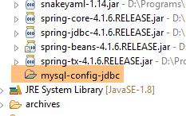
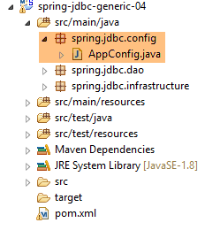
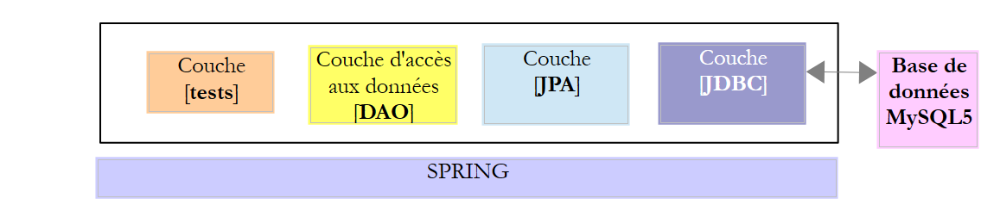
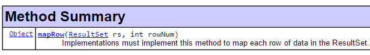

4. Einführung in Spring JDBC
In diesem Kapitel werden wir die folgende Architektur untersuchen:
 |
Es handelt sich also um dieselbe Architektur wie zuvor. Wir werden zwei Änderungen vornehmen:
- Die Datenbank wird zwei Tabellen enthalten, die durch eine Fremdschlüsselbeziehung miteinander verknüpft sind;
- die Schicht [DAO] wird mit der Bibliothek [Spring JDBC] implementiert, die die Verwaltung von API und JDBC vereinfacht;
4.1. Einrichtung der Arbeitsumgebung
Importieren Sie mit STS das Projekt [spring-jdbc-04], das sich im Ordner [<exemples>/spring-database-generic/spring-jdbc] befindet
 |
Außerdem müssen wir mit dem Client [MyManager] (siehe Abschnitt 3.1) eine neue Datenbank MySQL anlegen:
 |
- in [3]; die folgenden Beispiele basieren auf einer Datenbank namens MySQL, die den Namen [dbproduitscategories] trägt;
 |
- in [9] das Passwort des Benutzers root eingeben (dieses Passwort lautet in diesem Dokument root);
 |
 |
- In [18] wurde die Datenbank [dbproduitscategories] leer angelegt. Es werden Tabellen angelegt und mit einem Skript SQL [19-20] gefüllt;
 |
- Wechseln Sie in [21] in den Ordner [<exemples>/spring-database-config/mysql/databases];
 |
- in [25]: Stellen Sie sicher, dass Sie sich in der Datenbank [dbproduitscategories] befinden und nicht in der Datenbank [dbproduits];
- In [29] hat das Skript SQL fünf Tabellen angelegt. Die Tabellen [ROLES, USERS, USERS_ROLES] werden erst verwendet, wenn es um die Absicherung des Webdienstes geht, der erstellt wurde, um die Datenbank [dbproduitscategories] im Web bereitzustellen;
4.2. Die Datenbank [dbproduitscategories]
Die Datenbank [dbproduitscategories] ist eine Erweiterung der zuvor behandelten Datenbank [dbproduits]. Während in der Tabelle [PRODUITS] das Produkt einer Kategorie zugeordnet war, die durch eine Nummer identifiziert wurde, die keine besondere Bedeutung hatte, ist diese Nummer hier ein Fremdschlüssel in der Tabelle [CATEGORIES].
Die Tabelle [PRODUITS] sieht wie folgt aus:
 |
- [ID]: der autoinkrementierte Primärschlüssel der Tabelle [2];
- [NOM]: der eindeutige Name des Produkts [4];
- [PRIX]: der Preis des Produkts;
- [DESCRIPTION]: die Produktbeschreibung;
- [VERSIONING] ist die Versionsnummer des Produkts. Die ursprüngliche Version lautet 1 [3]. Bei jeder Änderung des Produkts wird die Versionsnummer durch den Code, der die Tabelle auswertet, erhöht;
- [CATEGORIE_ID]: Der Fremdschlüssel in der Tabelle [CATEGORIES], der die Kategorie angibt, zu der das Produkt gehört;
 |
- in [1-3], der Fremdschlüssel [CATEGORIE_ID] der Tabelle [PRODUITS]. Sie bezieht sich auf die Spalte [ID] der Tabelle [CATEGORIES] [4-5];
- wenn eine Kategorie gelöscht wird, werden alle damit verknüpften Produkte ebenfalls gelöscht ([6]). Dieser Punkt ist wichtig zu beachten, da er beim Aufbau der Ebene [DAO] unter Verwendung der Datenbank [dbproduitscategories] verwendet wird;
Die Tabelle [CATEGORIES] der Kategorien sieht wie folgt aus:
 |
- [ID]: automatisch inkrementierter Primärschlüssel;
- [VERSIONING]: Versionsnummer der Kategorie;
- [NOM]: Eindeutiger Name der Kategorie;
4.3. Das Eclipse-Projekt
 |
Das Projekt [spring-jdbc-04] implementiert die folgende Architektur:
 |
Das Projekt [spring-jdbc-04] ist ein Maven-Projekt, das durch die folgende Datei [pom.xml] konfiguriert wird:
 |
<?xml version="1.0" encoding="UTF-8"?>
<project xmlns="http://maven.apache.org/POM/4.0.0" xmlns:xsi="http://www.w3.org/2001/XMLSchema-instance"
xsi:schemaLocation="http://maven.apache.org/POM/4.0.0 http://maven.apache.org/xsd/maven-4.0.0.xsd">
<modelVersion>4.0.0</modelVersion>
<groupId>dvp.spring.database</groupId>
<artifactId>spring-jdbc-generic-04</artifactId>
<version>0.0.1-SNAPSHOT</version>
<packaging>jar</packaging>
<name>spring-jdbc-generic-04</name>
<description>Demo project for Spring JdbcTemplate</description>
<parent>
<groupId>org.springframework.boot</groupId>
<artifactId>spring-boot-starter-parent</artifactId>
<version>1.2.3.RELEASE</version>
<relativePath /> <!-- Überordnung aus Repository abrufen -->
</parent>
<properties>
<project.build.sourceEncoding>UTF-8</project.build.sourceEncoding>
<java.version>1.8</java.version>
</properties>
<dependencies>
<!-- Konfiguration JDBC des SGBD -->
<dependency>
<groupId>dvp.spring.database</groupId>
<artifactId>generic-config-jdbc</artifactId>
<version>0.0.1-SNAPSHOT</version>
</dependency>
<!-- Spring JdbcTemplate -->
<dependency>
<groupId>org.springframework.boot</groupId>
<artifactId>spring-boot-starter-jdbc</artifactId>
</dependency>
</dependencies>
<build>
<plugins>
<plugin>
<groupId>org.apache.maven.plugins</groupId>
<artifactId>maven-surefire-plugin</artifactId>
<version>2.18.1</version>
</plugin>
</plugins>
</build>
</project>
- Zeilen 28–32: Das Projekt stützt sich auf das Projekt [mysql-config-jdbc], das die Ebene JDBC konfiguriert;
- Zeilen 34–37: Das Artefakt [spring-boot-starter-jdbc] bezieht die Spring-Bibliotheken JDBC ein;
Letztendlich ergeben sich folgende Abhängigkeiten:
 |
4.4. Spring-Konfiguration
 |
Die Klasse [AppConfig], die das Spring-Projekt konfiguriert, lautet wie folgt:
package spring.jdbc.config;
import generic.jdbc.config.ConfigJdbc;
import org.apache.tomcat.jdbc.pool.DataSource;
import org.springframework.context.annotation.Bean;
import org.springframework.context.annotation.ComponentScan;
import org.springframework.context.annotation.Configuration;
import org.springframework.context.annotation.Import;
import org.springframework.jdbc.core.namedparam.NamedParameterJdbcTemplate;
import org.springframework.jdbc.core.simple.SimpleJdbcInsert;
import org.springframework.jdbc.datasource.DataSourceTransactionManager;
import org.springframework.transaction.PlatformTransactionManager;
import org.springframework.transaction.annotation.EnableTransactionManagement;
@Configuration
@ComponentScan(basePackages = { "spring.jdbc.dao" })
@EnableTransactionManagement
@Import({ generic.jdbc.config.ConfigJdbc.class })
public class AppConfig {
// Datenquelle
@Bean
public DataSource dataSource() {
// Datenquelle TomcatJdbc
DataSource dataSource = new DataSource();
// Zugriffskonfiguration JDBC
dataSource.setDriverClassName(ConfigJdbc.DRIVER_CLASSNAME);
dataSource.setUsername(ConfigJdbc.USER_DBPRODUITSCATEGORIES);
dataSource.setPassword(ConfigJdbc.PASSWD_DBPRODUITSCATEGORIES);
dataSource.setUrl(ConfigJdbc.URL_DBPRODUITSCATEGORIES);
// anfänglich offene Verbindungen
dataSource.setInitialSize(5);
// Ergebnis
return dataSource;
}
// Transaktionsmanager
@Bean
public PlatformTransactionManager transactionManager(DataSource dataSource) {
return new DataSourceTransactionManager(dataSource);
}
// JdbcTemplate
@Bean
public NamedParameterJdbcTemplate namedParameterJdbcTemplate(DataSource dataSource) {
return new NamedParameterJdbcTemplate(dataSource);
}
// Produkteintrag
@Bean
public SimpleJdbcInsert simpleJdbcInsertProduit(DataSource dataSource) {
return new SimpleJdbcInsert(dataSource).withTableName(ConfigJdbc.TAB_PRODUITS).usingGeneratedKeyColumns(
ConfigJdbc.TAB_PRODUITS_ID);
}
// Kategorie einfügen
@Bean
public SimpleJdbcInsert simpleJdbcInsertCategorie(DataSource dataSource) {
return new SimpleJdbcInsert(dataSource).withTableName(ConfigJdbc.TAB_CATEGORIES).usingGeneratedKeyColumns(
ConfigJdbc.TAB_CATEGORIES_ID);
}
}
- Zeile 16: Die Klasse ist eine Spring-Konfigurationsklasse;
- Zeile 17: Das Paket [spring.jdbc.dao] wird nach weiteren Spring-Komponenten durchsucht, die nicht bereits in der Klasse [AppConfig] enthalten sind. Dort befindet sich die Komponente, die die Schicht [DAO] implementiert;
- Zeile 18: Wir werden die Transaktionen nicht selbst verwalten, sondern dies Spring JDBC überlassen. Wir müssen lediglich die Methoden, die innerhalb einer Transaktion ausgeführt werden sollen, mit der Spring-Annotation [@Transactional] versehen. Zeile 18 stellt sicher, dass diese Annotation verarbeitet und nicht ignoriert wird. Die Transaktionsverwaltung wird durch eine der Abhängigkeiten des Projekts Spring JDBC gewährleistet, das von der Datei [pom.xml] importiert wird;
- Zeile 19: Hier werden die bereits in der Klasse [generic.jdbc.config.ConfigJdbc] des Projekts [mysql-config-jdbc] definierten Beans importiert;
- Zeilen 23–36: Die Datenquelle [tomcat-jdbc], die im Beispiel [spring-jdbc-02] eingeführt wurde;
- Zeilen 40–42: Der Transaktionsmanager, der mit der zuvor definierten Datenquelle verknüpft ist. Die Bean muss unbedingt den Namen [transactionManager] tragen, da dieser Name von der Annotation [@EnableTransactionManagement] verwendet wird. Der Manager [DataSourceTransactionManager] wird von der Spring-Bibliothek JDBC bereitgestellt (Zeile 12);
- Zeilen 45–48: Die Bean [namedParameterJdbcTemplate], auf der die Implementierung der Schicht [DAO] basieren wird. Dieser Bean wird von der Spring-Bibliothek JDBC bereitgestellt (Zeile 10). Auch dieser Bean ist mit der zuvor definierten Datenquelle verknüpft (Zeile 47);
- Zeilen 51–55: Die Bean [simpleJdbcInsertProduit] (beliebiger Name) wird verwendet, um ein Produkt in die Tabelle [PRODUITS] einzufügen und den generierten Primärschlüssel abzurufen. Die verschiedenen verwendeten Parameter lauten wie folgt:
- [dataSource]: die Datenquelle [tomcat-jdbc] aus den Zeilen 24–36;
- [ConfigJdbc.TAB_PRODUITS]: die Tabelle [PRODUITS];
- [ConfigJdbc.TAB_CATEGORIES_ID]: die Primärschlüsselspalte der Tabelle [PRODUITS]. Es sei daran erinnert, dass für PostgreSQL der Name dieser Spalte in Kleinbuchstaben geschrieben werden muss;
- Zeilen 58–62: Die Bean [simpleJdbcInsertCategorie] wird verwendet, um eine Kategorie in die Tabelle [CATEGORIES] einzufügen und den generierten Primärschlüssel abzurufen;
4.5. Ausnahmen des Projekts
 |
Wir haben die Klassen [UncheckedException, DaoException, ShortException] bereits im Projekt [spring-jdbc-03] kennengelernt. Wir fügen eine neue hinzu:
package spring.jdbc.infrastructure;
public class MyIllegalArgumentException extends UncheckedException {
private static final long serialVersionUID = 1L;
// Hersteller
public MyIllegalArgumentException() {
super();
}
public MyIllegalArgumentException(int code, Throwable e, String className) {
super(code, e, className);
}
}
- Die Klasse [MyIllegalArgumentException] leitet sich von der Klasse [UncheckedException] ab und ist daher eine nicht kontrollierte Klasse. Sie wird verwendet, um einen Aufruf einer Methode der Schicht [DAO] mit falschen Argumenten zu melden. Sie wurde nicht [IllegalArgumentException] genannt, da diese Ausnahme bereits in JDK existiert und dies den Compiler manchmal dazu veranlasste, eine fehlerhafte [import] zu generieren;
4.6. Die Entitäten des Projekts
 |
Die Klassen des Pakets [spring.jdbc.entities] sind die Abbildungen der Zeilen der Tabellen der Datenbank [dbproduitscategories]. Die Abbildungen der Tabellen [USERS, ROLES, USERS_ROLE] lassen wir vorerst außer Acht.
Alle Entitäten erben von der übergeordneten Klasse [AbstractCoreEntity]:
package spring.jdbc.entities;
public abstract class AbstractCoreEntity {
// Immobilien
protected Long id;
protected Long version;
// Hersteller
public AbstractCoreEntity() {
}
public AbstractCoreEntity(Long id, Long version) {
this.id = id;
this.version = version;
}
public AbstractCoreEntity(AbstractCoreEntity entity) {
this.id = entity.id;
this.version = entity.version;
}
public void setAbstractCoreEntity(AbstractCoreEntity entity) {
this.id = entity.id;
this.version = entity.version;
}
// ------------------------------------------------------------
// Neudefinition von [equals] und [hashcode]
@Override
public int hashCode() {
return (id != null ? id.hashCode() : 0);
}
@Override
public boolean equals(Object entity) {
if (!(entity instanceof AbstractCoreEntity)) {
return false;
}
String class1 = this.getClass().getName();
String class2 = entity.getClass().getName();
if (!class2.equals(class1)) {
return false;
}
AbstractCoreEntity other = (AbstractCoreEntity) entity;
return id != null && other.id != null && id.equals(other.id);
}
// Getter und Setter
...
}
- Zeile 5: Das Feld [id] wird der Spalte [ID] zugeordnet, dem Primärschlüssel der Tabellen;
- Zeile 6: Das Feld [version] wird der Spalte [VERSIONING] der Tabellen zugeordnet;
- Zeilen 8–26: Verschiedene Konstruktoren und Methoden zum Erstellen oder Initialisieren eines Objekts vom Typ [AbstractCoreEntity];
- Zeilen 35–47: Die Methode [equals] besagt, dass zwei Objekte [AbstractCoreEntity] gleich sind, wenn sie dasselbe Feld [id] haben. Dabei ist zu beachten, dass die Objekte [AbstractCoreEntity] Abbildungen von Tabellenzeilen sind, in denen [id] der Primärschlüssel ist und es daher keine zwei Zeilen mit demselben [id] geben kann;
- Zeilen 30–33: ein Vorschlag für [hashCode];
Die Klasse [Produit] ist das Abbild einer Zeile der Tabelle [PRODUITS]:
package spring.jdbc.entities;
import com.fasterxml.jackson.annotation.JsonFilter;
@JsonFilter("jsonFilterProduit")
public class Produit extends AbstractCoreEntity {
// Eigenschaften
private String nom;
private Long idCategorie;
private double prix;
private String description;
private Categorie categorie;
// Konstruktoren
public Produit() {
}
public Produit(Long id, Long version, String nom, Long idCategorie, double prix, String description,
Categorie categorie) {
super(id, version);
this.nom = nom;
this.idCategorie = idCategorie;
this.prix = prix;
this.description = description;
this.categorie = categorie;
}
// Signatur
public String toString() {
return String.format("[id=%s, version=%s, nom=%s, prix=10.2f, desc=%s, idCategorie=%s]", id, version, nom, prix,
description, idCategorie);
}
// Getter und Setter
...
}
- Zeile 6: Die Klasse [Produit] erweitert die Klasse [AbstractCoreEntity];
- Zeilen 8–12: Die Felder [id, version, nom, idCategorie, prix, description] entsprechen den Spalten [ID, VERSIONING, NOM, CATEGORIE_ID, PRIX, DESCRIPTION] der Tabelle [PRODUITS];
- Zeile 12: Das Objekt vom Typ [Categorie] mit dem Primärschlüssel [idCategorie]. Dieses Feld wird je nach Fall ausgefüllt oder bleibt leer. Ist es ausgefüllt, spricht man von der Langversion des Produkts [LongProduit], andernfalls von der Kurzversion des Produkts [ShortProduit];
- Zeile 5: ein Filter jSON. Zur Erinnerung: Das Projekt [mysql-config-jdbc] enthält eine Bibliothek jSON. Der Filter ist erforderlich, da das Feld [categorie] ausgefüllt sein kann oder auch nicht. In diesem Fall unterscheidet sich die Darstellung jSON des Produkts. Um diese beiden Fälle zu berücksichtigen, wird der Filter [jsonFilterProduit] in Zeile 5 konfiguriert. Mit einem Filter jSON lassen sich dynamisch die Felder festlegen, die aus der Darstellung jSON ausgeschlossen werden sollen. Sobald bekannt ist, dass das Feld [categorie] nicht ausgefüllt wurde, wird es aus der Produktdarstellung jSON ausgeschlossen;
Die Klasse [Categorie] ist die Darstellung einer Zeile der Tabelle [CATEGORIES]:
package spring.jdbc.entities;
import java.util.ArrayList;
import java.util.List;
import com.fasterxml.jackson.annotation.JsonFilter;
@JsonFilter("jsonFilterCategorie")
public class Categorie extends AbstractCoreEntity {
// Eigenschaften
private String nom;
public List<Produit> produits;
// Konstruktoren
public Categorie() {
}
public Categorie(Long id, Long version, String nom, List<Produit> produits) {
super(id, version);
this.nom = nom;
this.produits = produits;
}
// Signatur
public String toString() {
return String.format("[id=%s, version=%s, nom=%s]", id, version, nom);
}
// Methoden
public void addProduit(Produit produit) {
// Hinzufügen eines Produkts
if (produits == null) {
produits = new ArrayList<Produit>();
}
if (produit != null) {
// Das Produkt wird hinzugefügt
produits.add(produit);
// Kategorie festlegen
produit.setCategorie(this);
produit.setIdCategorie(this.id);
}
}
// Getter und Setter
...
}
- Zeile 9: Die Klasse [Categorie] erweitert die Klasse [AbstractCoreEntity];
- Zeile 12: Die Felder [id, version, nom] entsprechen den Spalten [ID, VERSIONING, NOM] der Tabelle [CATEGORIES];
- Zeile 13: Das Feld [produits] stellt die Liste der Produkte der Kategorie dar. Dieses Feld ist nicht immer ausgefüllt. Ist dies nicht der Fall, spricht man von der Kurzversion der Kategorie [ShortCategorie], andernfalls von der Langversion der Kategorie [LongCategorie];
- Zeilen 32–44: Mit der Methode [addProduit] kann ein Produkt zur Kategorie hinzugefügt werden (Zeile 39) und im hinzugefügten Produkt können die Merkmale seiner Kategorie festgelegt werden (idCategorie und „Kategorie“);
- Zeile 8: ein Filter jSON. Wenn die Bibliothek jSON ein Objekt [Categorie] serialisieren/deserialisieren muss, muss ihr mitgeteilt werden, wie der Filter mit dem Namen [jsonFilterCategorie] zu behandeln ist;
4.7. Die Schnittstelle Idao<T>
 |
 |
Die Schnittstelle [IDao] der Schicht [DAO] hat folgende Signatur:
package spring.jdbc.dao;
import java.util.List;
import spring.jdbc.entities.AbstractCoreEntity;
public interface IDao<T extends AbstractCoreEntity> {
// Liste aller T-Entitäten
public List<T> getAllShortEntities();
public List<T> getAllLongEntities();
// bestimmter Entitäten – Kurzversion
public List<T> getShortEntitiesById(Iterable<Long> ids);
public List<T> getShortEntitiesById(Long... ids);
public List<T> getShortEntitiesByName(Iterable<String> names);
public List<T> getShortEntitiesByName(String... names);
// bestimmter Entitäten – Langfassung
public List<T> getLongEntitiesById(Iterable<Long> ids);
public List<T> getLongEntitiesById(Long... ids);
public List<T> getLongEntitiesByName(Iterable<String> names);
public List<T> getLongEntitiesByName(String... names);
// Aktualisierung mehrerer Entitäten
public List<T> saveEntities(Iterable<T> entities);
public List<T> saveEntities(@SuppressWarnings("unchecked") T... entities);
// Löschen aller Entitäten
public void deleteAllEntities();
// Löschen mehrerer Entitäten
public void deleteEntitiesById(Iterable<Long> ids);
public void deleteEntitiesById(Long... ids);
public void deleteEntitiesByName(Iterable<String> names);
public void deleteEntitiesByName(String... names);
public void deleteEntitiesByEntity(Iterable<T> entities);
public void deleteEntitiesByEntity(@SuppressWarnings("unchecked") T... entities);
}
- Zeile 7: Hier handelt es sich um eine Schnittstelle [IDao], die durch einen Typ T mit einer Bedingung parametrisiert ist: Dieser Typ muss die Klasse [AbstractCoreEntity] erweitern oder die Schnittstelle [AbstractCoreEntity] implementieren. Das Schlüsselwort [extends] wird für beide Fälle verwendet. Hier wird T entweder durch den Typ [Produit] oder durch den Typ [Categorie] instanziiert. Tatsächlich stellt man recht schnell fest, dass man bei den Typen [Produit] und [Categorie] dieselben Operationen (Einfügen, Ändern, Löschen, Auswählen) durchführt. Es erscheint daher sinnvoll, diese Methoden in einer generischen Schnittstelle zusammenzufassen;
- je nach Fall bezeichnen die Bezeichnungen [LongEntity] und [ShortEntity] unterschiedliche Situationen:
- Wenn T der Typ [Produit] ist:
- ist [ShortEntity] das Produkt, bei dem das Feld [Categorie categorie] nicht ausgefüllt ist;
- [LongEntity] ist das Produkt, bei dem das Feld [Categorie categorie] ausgefüllt ist;
- wenn T der Typ [Categorie] ist:
- [ShortEntity] ist die Kategorie, bei der das Feld [List<Produit> produits] nicht ausgefüllt ist;
- [LongEntity] ist das Produkt, bei dem das Feld [List<Produit> produits] ausgefüllt ist;
- Wenn T der Typ [Produit] ist:
Wir haben also eine Schnittstelle mit 19 Methoden. Die meisten Methoden existieren doppelt. Nehmen wir das Beispiel der Methode [getShortEntitiesById]:
public List<T> getShortEntitiesById(Iterable<Long> ids);
public List<T> getShortEntitiesById(Long... ids);
- Zeilen 1 und 3: Der Parameter ist die Liste der Primärschlüssel der Entitäten, für die die Kurzversion gewünscht wird. Diese Liste wird in zwei verschiedenen Formen dargestellt:
- Zeile 1: eine Liste, die die Schnittstelle [Iterable<Long>] implementiert. Der Typ [List<Long>] implementiert diese Schnittstelle, aber es gibt noch viele andere. Hätten wir [List<Long> ids] angegeben, hätte dies für unsere Beispiele ausgereicht, aber wir hätten den Benutzer unserer Beispiele gezwungen, Typumwandlungen vorzunehmen, wenn sein Parameter nicht genau dem erwarteten Typ entsprochen hätte;
- Zeile 3: Leider implementiert der Typ `Long[]` die Schnittstelle `[Iterable<Long>]` nicht. In diesem Fall verwenden wir die Version aus Zeile 3. Der formale Parameter [Long... ids] (3 Punkte) kann sowohl den Wert eines Arrays als auch einer Folge von IDs annehmen: getShortEntitiesById(id1, id2, ...);
Genau diese Schnittstelle IDao<T> wird durch die folgende Architektur implementiert:
 |
wobei eine Schicht [JPA] (Java Persistence API) zwischen der Schicht [DAO] und dem Treiber JDBC des SGBD eingefügt wird. Dadurch erhalten wir eine gemeinsame Testschicht für beide Architekturen. In beiden Fällen verfügt die Schicht [DAO] über zwei Schnittstellen:
- IDao<Produkt> für den Zugriff auf die Tabelle [PRODUITS];
- IDao<Kategorie> für den Zugriff auf die Tabelle [CATEGORIES];
4.8. Implementierung der Schnittstelle IDao<T>
|
- Die Schnittstelle IDao<Produkt> wird von der Klasse [DaoProduit] implementiert;
- Die Schnittstelle IDao<Kategorie> wird von der Klasse [DaoCategorie] implementiert;
Die Klassen [DaoProduit] und [DaoCategorie] erben beide von der abstrakten Klasse [AbstractDao] mit folgendem :
package spring.jdbc.dao;
import java.util.ArrayList;
import java.util.List;
import org.springframework.beans.factory.annotation.Autowired;
import org.springframework.beans.factory.annotation.Qualifier;
import org.springframework.transaction.annotation.Transactional;
import spring.jdbc.entities.AbstractCoreEntity;
import spring.jdbc.infrastructure.MyIllegalArgumentException;
import com.google.common.collect.Lists;
public abstract class AbstractDao<T extends AbstractCoreEntity> implements IDao<T> {
// Einfügungen
@Autowired
@Qualifier("maxPreparedStatementParameters")
protected int maxPreparedStatementParameters;
// lokal
protected String simpleClassName = getClass().getSimpleName();
@Override
@Transactional(readOnly = true)
public List<T> getShortEntitiesById(Iterable<Long> ids) {
// Gültigkeit des Arguments
List<T> entities = checkNullOrEmptyArgument(true, ids);
if (entities != null) {
return entities;
}
// Abruf in Tranchen
entities = new ArrayList<T>();
int taille = maxPreparedStatementParameters;
List<Long> listIds = Lists.newArrayList(ids);
int nbIds = listIds.size();
for (int i = 0; i < nbIds; i += taille) {
int limit = Math.min(nbIds, i + taille);
entities.addAll(getShortEntitiesById(listIds.subList(i, limit)));
}
// Ergebnis
return entities;
}
@Override
@Transactional(readOnly = true)
public List<T> getShortEntitiesById(Long... ids) {
// Gültigkeit des Arguments
List<T> entities = checkNullOrEmptyArgument(true, ids);
if (entities != null) {
return entities;
}
// Ergebnis
return getShortEntitiesById((Iterable<Long>) Lists.newArrayList(ids));
}
@Override
@Transactional(readOnly = true)
public List<T> getShortEntitiesByName(Iterable<String> names) {
...
}
@Override
@Transactional(readOnly = true)
public List<T> getShortEntitiesByName(String... names) {
...
}
@Override
@Transactional(readOnly = true)
public List<T> getLongEntitiesById(Iterable<Long> ids) {
...
}
@Override
@Transactional(readOnly = true)
public List<T> getLongEntitiesById(Long... ids) {
...
}
@Override
@Transactional(readOnly = true)
public List<T> getLongEntitiesByName(Iterable<String> names) {
...
}
@Override
@Transactional(readOnly = true)
public List<T> getLongEntitiesByName(String... names) {
...
}
@Override
@Transactional
public List<T> saveEntities(Iterable<T> entities) {
...
}
@Override
@Transactional
public List<T> saveEntities(@SuppressWarnings("unchecked") T... entities) {
...
}
@Override
public void deleteEntitiesById(Iterable<Long> ids) {
...
}
@Override
public void deleteEntitiesById(Long... ids) {
...
}
@Override
public void deleteEntitiesByName(Iterable<String> names) {
...
}
@Override
public void deleteEntitiesByName(String... names) {
...
}
@Override
public void deleteEntitiesByEntity(Iterable<T> entities) {
...
}
@Override
public void deleteEntitiesByEntity(@SuppressWarnings("unchecked") T... entities) {
...
}
protected void deleteEntitiesByEntity(List<T> entities) {
...
}
@Override
@Transactional(readOnly = true)
public abstract List<T> getAllShortEntities();
@Override
@Transactional(readOnly = true)
public abstract List<T> getAllLongEntities();
@Override
public abstract void deleteAllEntities();
// private Methoden ----------------------------------------------
private <T2> List<T> checkNullOrEmptyArgument(boolean checkEmpty, Iterable<T2> elements) {
...
}
@SuppressWarnings("unchecked")
private <T2> List<T> checkNullOrEmptyArgument(boolean checkEmpty, T2... elements) {
...
}
// geschützte Methoden ----------------------------------------------
abstract protected List<T> getShortEntitiesById(List<Long> ids);
abstract protected List<T> getShortEntitiesByName(List<String> names);
abstract protected List<T> getLongEntitiesById(List<Long> ids);
abstract protected List<T> getLongEntitiesByName(List<String> names);
abstract protected List<T> saveEntities(List<T> entities);
abstract protected void deleteEntitiesById(List<Long> ids);
abstract protected void deleteEntitiesByName(List<String> names);
}
- Zeile 15: Die Klasse [AbstractDao] ist abstrakt (Schlüsselwort „abstract“). Als solche kann sie nicht instanziiert werden. Sie kann lediglich abgeleitet werden. Diese Klasse hat mehrere Funktionen:
- die Art der Transaktion festzulegen, in der jede Methode ausgeführt wird;
- So viele gemeinsame Elemente wie möglich in den beiden Implementierungen der Schnittstellen [IDao<Produit>] und [IDao<Categorie>] zu integrieren. Dabei geht es hauptsächlich um die Überprüfung der Gültigkeit der Argumente. Argumente vom Typ null sowie leere Listen werden nicht akzeptiert;
- den Typ der Parameter `T... params` und `Iterable<T> params` zu einem einzigen vereinheitlichen: `List<T> params`;
- die Arbeit an die untergeordneten Klassen delegieren, sobald sie für eine der beiden Schnittstellen spezifisch wird;
Dank der Vereinheitlichung der Parameter der verschiedenen Methoden durch die Klasse [AbstractDao] müssen die untergeordneten Klassen [DaoProduit] und [DaoCategorie] nur noch 10 statt 19 Methoden implementieren:
// Von Unterklassen implementierte Methoden ----------------------------------------------
abstract protected List<T> getShortEntitiesById(List<Long> ids);
abstract protected List<T> getShortEntitiesByName(List<String> names);
abstract protected List<T> getLongEntitiesById(List<Long> ids);
abstract protected List<T> getLongEntitiesByName(List<String> names);
abstract protected List<T> saveEntities(List<T> entities);
abstract protected void deleteEntitiesById(List<Long> ids);
abstract protected void deleteEntitiesByName(List<String> names);
@Override
@Transactional(readOnly = true)
public abstract List<T> getAllShortEntities();
@Override
@Transactional(readOnly = true)
public abstract List<T> getAllLongEntities();
@Override
public abstract void deleteAllEntities();
Sehen wir uns einige Methoden der Klasse [AbstractDao] an.
Methode [getShortEntitiesById]
Diese Methode dient dazu, die Kurzform von Entitäten abzurufen, deren Primärschlüssel angegeben werden.
// Injektionen
@Autowired
@Qualifier("maxPreparedStatementParameters")
protected int maxPreparedStatementParameters;
// lokal
protected String simpleClassName = getClass().getSimpleName();
@Override
@Transactional(readOnly = true)
public List<T> getShortEntitiesById(Iterable<Long> ids) {
...
}
- Zeilen 2–4: Es wird die Bean [maxPreparedStatementParameters] injiziert, die in der Konfigurationsdatei [ConfigJdbc] definiert ist, welche die Schicht JDBC eines bestimmten SGBD konfiguriert:
// Maximale Anzahl von Parametern eines [PreparedStatement]
public final static int MAX_PREPAREDSTATEMENT_PARAMETERS = 10000;
@Bean(name = "maxPreparedStatementParameters")
public int maxPreparedStatementParameters() {
return MAX_PREPAREDSTATEMENT_PARAMETERS;
}
- Zeilen 1–7: Definieren die Bean [maxPreparedStatementParameters], die die maximale Anzahl von Parametern festlegt, die einem Typ [PreparedStatement] zugewiesen werden können. Dieser Bedarf trat bei den Beans SGBD und MySQL nicht auf, die 10.000 Parameter für einen Typ [PreparedStatement] akzeptierten. Bei Tests mit den Servern SGBD und SQL wurde eine Ausnahme ausgelöst, die darauf hinwies, dass die maximale Anzahl an Parametern für einen Typ [PreparedStatement] bei 2100 lag. Daher wurde diese Zahl zu einem Konfigurationsparameter der verschiedenen SGBD. Sie muss daher in das Konfigurationsprojekt [sgbd-config-jdbc] jedes SGBD aufgenommen werden;
Kehren wir zum Code der Methode [getShortEntitiesById] zurück:
// Injektionen
@Autowired
@Qualifier("maxPreparedStatementParameters")
protected int maxPreparedStatementParameters;
// lokal
protected String simpleClassName = getClass().getSimpleName();
@Override
@Transactional(readOnly = true)
public List<T> getShortEntitiesById(Iterable<Long> ids) {
...
}
- Zeile 7: Der Name der Klasse. Wird als Parameter für einen der Konstruktoren der Ausnahmeklasse [DaoException] verwendet;
- Zeile 10: Die Anmerkung [@Transactional(readOnly = true)] gibt an, dass die Methode in einer schreibgeschützten Transaktion ausgeführt werden muss. Man kann sich fragen, welchen Nutzen eine solche Transaktion hat, da die Methode lediglich Lesevorgänge durchführt und es im Falle eines Fehlers daher nichts zu rollbacken gibt. Der Autor der Bibliothek [Spring Data] empfiehlt dies und erklärt, warum. Ich bin seinem Rat gefolgt;
Der Methodenkörper lautet wie folgt:
@Override
@Transactional(readOnly = true)
public List<T> getShortEntitiesById(Iterable<Long> ids) {
// Gültigkeit des Arguments
List<T> entities = checkNullOrEmptyArgument(true, ids);
if (entities != null) {
return entities;
}
...
}
- Zeile 5: Die Gültigkeit des Parameters [ids] wird durch die folgende Methode überprüft:
private <T2> List<T> checkNullOrEmptyArgument(boolean checkEmpty, Iterable<T2> elements) {
// Null-Elemente?
if (elements == null) {
throw new MyIllegalArgumentException(222, new NullPointerException("L'argument ne peut être null"), simpleClassName);
}
// Leere Elemente?
if (!elements.iterator().hasNext()) {
if (checkEmpty) {
throw new MyIllegalArgumentException(223, new RuntimeException("l'argument ne peut être une liste vide"),
simpleClassName);
} else {
return new ArrayList<T>();
}
}
// Standardwert
return null;
}
- Zeile 1: Die Methode [checkNullOrEmptyArgument] ist eine generische Methode, die durch den Typ <T2> parametrisiert wird. T2 ist der Typ der Elemente, die als zweiter Parameter an die Methode übergeben werden. Dies kann [Long, String, AbstractCoreEntity] sein;
- Zeile 1: Die Methode [checkNullOrEmptyArgument] akzeptiert zwei Parameter:
- [Iterable<T2> elements]: der zu prüfende Parameter;
- [checkEmpty]: auf „wahr“ gesetzt, wenn geprüft werden soll, ob der vorherige Parameter eine nicht leere Liste ist;
- Zeilen 4–6: Es wird überprüft, ob der Parameter [elements] nicht null ist. Ist dies nicht der Fall, wird eine Ausnahme vom Typ [MyIllegalArgumentException] ausgelöst;
- Zeilen 8–15: Wenn die Liste leer ist und überprüft werden sollte, ob sie nicht leer ist, wird eine Ausnahme vom Typ [MyIllegalArgumentException] ausgelöst;
- Zeile 13: Wenn die Liste leer ist und nicht überprüft werden soll, ob sie nicht leer ist, wird eine leere Liste mit Elementen vom Typ T zurückgegeben. Die Schnittstelle [Iterable<T2>] verfügt über eine Methode [iterator()], mit der die Elemente der Liste, die die Schnittstelle implementieren, durchlaufen werden können. Zwei Methoden dieses Iterators sind nützlich:
- [itérateur].hasNext(): Gibt „true“ zurück, wenn die Liste noch ein Element enthält, das verarbeitet werden kann, andernfalls „false“;
- [iterateur].next(): Gibt das aktuelle Element der Liste zurück und springt um ein Element weiter;
- Letztendlich
- wenn das Argument [T2... elements] den Wert null hat oder leer ist, wird eine Ausnahme vom Typ [MyIllegalArgumentException] ausgelöst;
- wenn das Argument [T2... elements] eine leere Liste ist und dies zulässig war, wird eine leere Liste mit Elementen vom Typ T zurückgegeben;
Eine analoge Methode existiert, wenn das zu prüfende Argument vom Typ [T2... elements] ist:
@SuppressWarnings("unchecked")
private <T2> List<T> checkNullOrEmptyArgument(boolean checkEmpty, T2... elements) {
...
}
Kehren wir zum Code der Methode [getShortEntitiesById] zurück:
@Override
@Transactional(readOnly = true)
public List<T> getShortEntitiesById(Iterable<Long> ids) {
// Gültigkeit des Arguments
List<T> entities = checkNullOrEmptyArgument(true, ids);
// Abfrage in Tranchen
entities = new ArrayList<T>();
int taille = maxPreparedStatementParameters;
List<Long> listIds = Lists.newArrayList(ids);
int nbIds = listIds.size();
for (int i = 0; i < nbIds; i += taille) {
int limit = Math.min(nbIds, i + taille);
entities.addAll(getShortEntitiesById(listIds.subList(i, limit)));
}
// Ergebnis
return entities;
}
- Zeile 7: Wenn wir hier angelangt sind, bedeutet dies, dass das Argument [Iterable<Long> ids] gültig ist;
- Zeilen 7–14: Wir werden später sehen, dass die Methode [getShortEntitiesById] durch einen Typ [PreparedStatement] implementiert wird, dessen Parameter die Liste der zu suchenden Primärschlüssel sind. Zum Beispiel:
public final static String SELECT_SHORTCATEGORIE_BYID = "SELECT c.ID as c_ID, c.VERSIONING as c_VERSIONING, c.NOM as c_NOM FROM CATEGORIES c WHERE c.ID in (:ids)";
: „ids“ ist ein Parameter, dessen tatsächlicher Wert ein Typ „List<Long>“ ist. Jedes Element dieser Liste wird Gegenstand eines Parameters „?“ in einem Typ „[PreparedStatement]“ sein. Wir haben jedoch bereits erwähnt, dass dieser Typ eine maximale Anzahl von Parametern akzeptiert, die durch das Feld „[maxPreparedStatementParameters]“ der Klasse festgelegt ist;
- Zeile 7: Die Liste der T-Entitäten, die von der Methode [getShortEntitiesById] zurückgegeben wird. Diese Liste wird aus Blöcken von [maxPreparedStatementParameters]-Elementen aufgebaut;
- Zeile 9: Ausgehend vom Argument [Iterable<Long> ids] wird ein Typ [List<Long> listIds] erstellt. Die Klasse [Lists] ist eine Klasse der Google Guava-Bibliothek, die zahlreiche statische Methoden zur Bearbeitung von Objekt-Sammlungen bietet. Die Google Guava-Bibliothek wurde (pom.xml) vom Maven-Projekt [mysql-config-jdbc] importiert:
<!-- Google Guava -->
<dependency>
<groupId>com.google.guava</groupId>
<artifactId>guava</artifactId>
<version>16.0.1</version>
</dependency>
- Zeile 10: die Anzahl der zu suchenden T-Einheiten in der Datenbank;
- Zeilen 11–13: Sie werden in Gruppen von [taille = maxPreparedStatementParameters] Elementen gesucht;
- Zeile 12: eine Berechnung, um zu vermeiden, dass das Ende der Liste [listIds] überschritten wird;
- Zeile 13: Die T-Entitäten werden durch den Aufruf von [getShortEntitiesById(listIds.subList(i, limit))] abgerufen. Diese Methode ist in der Klasse wie folgt definiert:
abstract protected List<T> getShortEntitiesById(List<Long> ids);
Es ist also die Tochterklasse, die die T-Entitäten aus der Datenbank abruft:
- [DaoProduit], wenn T vom Typ [Produit] ist;
- [DaoCategorie], wenn T vom Typ [Categorie] ist;
Diese Aufgabe der übergeordneten Klasse hat zwei Vorteile:
- Die Signatur der Methode [getShortEntitiesById] in der Unterklasse ist eindeutig: Ihr Argument ist vom Typ [List<Long> ids];
- die Tochterklasse muss sich nicht um das Problem der Parameter eines [PreparedStatement] kümmern. Ihre übergeordnete Klasse hat dies bereits für sie übernommen;
- Zeile 13: Die von der untergeordneten Klasse zurückgegebenen Entitäten werden in der Liste der Entitäten zusammengefasst, die von der übergeordneten Klasse zurückgegeben wird (Zeile 16);
Sehen wir uns nun die Implementierung der anderen Methode [getShortEntitiesById] der Klasse an:
@Override
@Transactional(readOnly = true)
public List<T> getShortEntitiesById(Long... ids) {
// Gültigkeit des Arguments
List<T> entities = checkNullOrEmptyArgument(true, ids);
// Ergebnis
return getShortEntitiesById((Iterable<Long>) Lists.newArrayList(ids));
}
- Zeile 3: Der Typ des Arguments hat sich geändert: `Long... ids`;
- Zeile 5: Die Gültigkeit dieses Arguments wird geprüft;
- Zeile 7: Es wird die soeben beschriebene Methode [getShortEntitiesById] aufgerufen. Auch hier wird die Klasse [Lists] aus der Bibliothek [Google Guava] verwendet. Beachten Sie, dass ein expliziter Typumwandlung zum Typ `[Iterable<Long>]` erforderlich ist, um dem Compiler bei der Auswahl der richtigen Methode zu helfen, da die Methode `[getShortEntitiesById]` in der Klasse drei Signaturen hat:
- List<T> getShortEntitiesById(Long... ids);
- List<T> getShortEntitiesById(Iterable<Long> ids);
- List<T> getShortEntitiesById(List<Long> ids), die abstrakt ist und von der Unterklasse implementiert wird;
Auf die abstrakte Klasse [AbstractDao], die als übergeordnete Klasse der Klassen [DaoProduit] und [DaoCategorie] dient, werden wir nicht näher eingehen. Es sei lediglich angemerkt, dass es manchmal sinnvoll ist, Verhaltensweisen, die mehreren Klassen gemeinsam sind, in einer übergeordneten Klasse – sei sie abstrakt oder nicht – zusammenzufassen. Nach dieser Arbeit müssen die Unterklassen nur noch die folgenden Methoden implementieren:
// Von den untergeordneten Klassen implementierte Methoden ----------------------------------------------
abstract protected List<T> getShortEntitiesById(List<Long> ids);
abstract protected List<T> getShortEntitiesByName(List<String> names);
abstract protected List<T> getLongEntitiesById(List<Long> ids);
abstract protected List<T> getLongEntitiesByName(List<String> names);
abstract protected List<T> saveEntities(List<T> entities);
abstract protected void deleteEntitiesById(List<Long> ids);
abstract protected void deleteEntitiesByName(List<String> names);
@Override
@Transactional(readOnly = true)
public abstract List<T> getAllShortEntities();
@Override
@Transactional(readOnly = true)
public abstract List<T> getAllLongEntities();
@Override
public abstract void deleteAllEntities();
Der Code in Abschnitt 4.8 zeigt die verschiedenen Transaktionstypen, die für jede Methode verwendet werden. Dabei sind einige Punkte zu beachten:
- Methoden, die die Datenbank auslesen, sind mit [@Transactional(readOnly = true)] gekennzeichnet;
- Methoden, die die Datenbank ändern, sind mit [@Transactional] gekennzeichnet;
- Methoden mit [delete] sind nicht gekennzeichnet und werden daher nicht in einer Transaktion ausgeführt. Dahinter steht der Gedanke, dass der Benutzer bei einem fehlgeschlagenen Löschvorgang wahrscheinlich nicht alle zuvor erfolgreich durchgeführten Löschvorgänge rückgängig machen möchte;
4.9. Die Klasse [DaoCategorie]
 |
|
Die Klasse [DaoCategorie] implementiert die Schnittstelle [IDao<Categorie>], die denZugriff auf die Daten der Tabelle [CATEGORIES] aus der Datenbank MySQL [dbproduitscategories] gewährleistet. Ihr Grundgerüst sieht wie folgt aus:
package spring.jdbc.dao;
import generic.jdbc.config.ConfigJdbc;
import java.sql.ResultSet;
import java.sql.SQLException;
import java.util.ArrayList;
import java.util.Collections;
import java.util.HashMap;
import java.util.List;
import java.util.Map;
import org.springframework.beans.factory.annotation.Autowired;
import org.springframework.jdbc.core.RowMapper;
import org.springframework.jdbc.core.namedparam.MapSqlParameterSource;
import org.springframework.jdbc.core.namedparam.NamedParameterJdbcTemplate;
import org.springframework.jdbc.core.namedparam.SqlParameterSource;
import org.springframework.jdbc.core.namedparam.SqlParameterSourceUtils;
import org.springframework.jdbc.core.simple.SimpleJdbcInsert;
import org.springframework.stereotype.Component;
import spring.jdbc.entities.Categorie;
import spring.jdbc.entities.Produit;
import spring.jdbc.infrastructure.DaoException;
import com.google.common.collect.Lists;
@Component
public class DaoCategorie extends AbstractDao<Categorie> {
// Konstanten
// Injektionen
@Autowired
private NamedParameterJdbcTemplate namedParameterJdbcTemplate;
@Autowired
private SimpleJdbcInsert simpleJdbcInsertCategorie;
@Autowired
private IDao<Produit> daoProduit;
@Override
public List<Categorie> getAllShortEntities() {
...
}
@Override
public List<Categorie> getAllLongEntities() {
...
}
@Override
public void deleteAllEntities() {
...
}
@Override
protected List<Categorie> getShortEntitiesById(List<Long> ids) {
...
}
@Override
protected List<Categorie> getShortEntitiesByName(List<String> names) {
...
}
@Override
protected List<Categorie> getLongEntitiesById(List<Long> ids) {
...
}
@Override
protected List<Categorie> getLongEntitiesByName(List<String> names) {
...
}
@Override
protected List<Categorie> saveEntities(List<Categorie> entities) {
...
}
@Override
protected void deleteEntitiesById(List<Long> ids) {
...
}
@Override
protected void deleteEntitiesByName(List<String> names) {
...
}
...
}
// --------------------- Mapper
class ShortCategorieMapper implements RowMapper<Categorie> {
....
}
class LongCategorieMapper implements RowMapper<Categorie> {
....
}
- Zeile 28: Die Klasse [DaoCategorie] ist eine Spring-Komponente und kann als solche in andere Spring-Komponenten injiziert werden;
- Zeile 29: Die Klasse [DaoCategorie] erweitert die abstrakte Klasse [AbstractDao<Categorie>] und ist somit eine Implementierung der Schnittstelle [IDao<Categorie>];
- Zeilen 34–37: Injektion von Beans, die in der in Abschnitt 4.4 beschriebenen Klasse „[AppConfig]“ definiert sind;
- Zeilen 38–39: Einbindung einer Referenz auf die Klasse [DaoProduit], die die Schnittstelle [IDao<Produit>] implementiert, welche den Zugriff auf die Daten der Tabelle [PRODUITS] verwaltet;
- Zeilen 41–89: Implementierung der Schnittstelle [IDao<Categorie>];
- Zeilen 95–101: zwei interne Klassen, die die Schnittstelle [RowMapper<T>] implementieren;
Betrachten wir die Methoden nacheinander.
4.9.1. Die Methode [getAllShortEntities]
Die Methode [getAllShortEntities] gibt alle Kategorien aus der Tabelle [CATEGORIES] in ihrer Kurzform zurück:
@Override
public List<Categorie> getAllShortEntities() {
try {
return namedParameterJdbcTemplate.query(ConfigJdbc.SELECT_ALLSHORTCATEGORIES, new ShortCategorieMapper());
} catch (Exception e) {
throw new DaoException(202, e, simpleClassName);
}
}
Alle Methoden basieren auf dem Objekt [namedParameterJdbcTemplate], das in der Spring-Konfigurationsdatei definiert ist und von der Spring-Bibliothek JDBC bereitgestellt wird. Dieses Objekt verfügt über zahlreiche Methoden. Die oben verwendete Methode lautet wie folgt:

- [sql] ist der auszuführende Befehl SQL;
- [rowMapper] ist eine Instanz der folgenden Schnittstelle [RowMapper<T>]:

Die Idee ist folgende:
- Die Methode [namedParameterJdbcTemplate].query(String sql, RowMapper<T> rowMapper) führt den Befehl SQL vom Typ [Select] aus. Sie behandelt eventuelle Ausnahmen sowie das Öffnen und Schließen der Verbindung zu SGBD. Das Einzige, was sie nicht tun kann, ist,die Elemente des [ResultSet] aus den Objekten, die sie erhält, in einen Typ [Categorie] zu kapseln, da sie die Verbindung zwischen den Feldern des Typs [Categorie] und den Spalten des [Resultset] nicht kennt. Wir werden später sehen, dass diese Zuordnung mithilfe der Technologie JPA hergestellt wird, wodurch die Kapselung der Elemente eines [ResultSet] in Instanzen des Typs T automatisch erfolgt. Derzeit ist der zweite Parameter der Methode [query] eine Instanz der Schnittstelle [RowMapper<T>], die diese Kapselung vornehmen kann;
Kommen wir zurück zum Code:
@Override
public List<Categorie> getAllShortEntities() {
try {
return namedParameterJdbcTemplate.query(ConfigJdbc.SELECT_ALLSHORTCATEGORIES, new ShortCategorieMapper());
} catch (Exception e) {
throw new DaoException(202, e, simpleClassName);
}
}
Die Reihenfolge SQL [ConfigJdbc.SELECT_ALLSHORTCATEGORIES] lautet wie folgt:
public final static String SELECT_ALLSHORTCATEGORIES = "SELECT c.ID as c_ID, c.VERSIONING as c_VERSIONING, c.NOM as c_NOM FROM CATEGORIES c";
Die Abfrage fordert die Spalten [ID, VERSIONING, NOM] der Elemente der Tabelle [CATEGORIES] an. Wir verwenden durchgehend die folgende Syntax:
SELECT t1.COL1 as t1_COL1, t1.COL2 as t1_COL2 FROM TABLE1 t1, TABLE2 t2 WHERE ...
Wichtig ist die Benennung der Spalten, die durch den SELECT mit dem Attribut [as nom_colonne] erzeugt werden. Nur so ist die Portabilität zwischen SGBD gewährleistet, da diese alle eine proprietäre Art der Benennung der Spalten verwenden, die durch einen SELECT erzeugt wurden, bei dem Spalten aus verschiedenen Tabellen denselben Namen haben (in unserem Fall beispielsweise ID, NOM oder VERSIONING). Diese Mehrdeutigkeit beseitigen wir dann, indem wir selbst den Namen angeben, den diese Spalten tragen sollen.
Die interne Klasse [ShortCategorieMapper] lautet wie folgt:
class ShortCategorieMapper implements RowMapper<Categorie> {
@Override
public Categorie mapRow(ResultSet rs, int rowNum) throws SQLException {
return new Categorie(rs.getLong("c_ID"), rs.getLong("c_VERSIONING"), rs.getString("c_NOM"), null);
}
}
- Zeile 1: Die Klasse [ShortCategorieMapper] implementiert die Schnittstelle [RowMapper<Categorie>] und muss daher die Methode [mapRow] aus den Zeilen 4–5, deren Aufgabe es ist, eine Zeile des durch den Befehl [SELECT] erzeugten [ResultSet rs] in einen Typ [Categorie] zu kapseln;
- Zeile 5: Diese Kapselung erfolgt. Es ist zu beachten, dass der von den Methoden [rs.getType(nom)] verwendete Name der Name ist, der in den Attributen [as nom] der Spalten des SELECT verwendet wird;
Wir haben also die Liste der Kategorien in ihrer Kurzform erhalten, ohne Ausnahmen oder Verbindungen verwalten zu müssen. Darin liegt der Vorteil der Spring-Bibliothek JDBC, die alles verwaltet, was bei der Verwaltung von Tabellenelementen generalisiert werden kann, und dem Entwickler die Aufgaben überlässt, die sich nicht generalisieren lassen.
4.9.2. Die Methode [getAllLongEntities]
Die Methode [getAllLongEntities] gibt alle Kategorien aus der Tabelle [CATEGORIES] in ihrer Langform zurück:
@Override
public List<Categorie> getAllLongEntities() {
try {
return filterCategories(namedParameterJdbcTemplate.query(ConfigJdbc.SELECT_ALLLONGCATEGORIES,
new LongCategorieMapper()));
} catch (Exception e) {
throw new DaoException(223, e, simpleClassName);
}
}
Die Reihenfolge SQL [ConfigJdbc.SELECT_ALLLONGCATEGORIES] lautet wie folgt:
public final static String SELECT_ALLLONGCATEGORIES = "SELECT p.ID as p_ID, p.VERSIONING as p_VERSION, p.NOM as p_NOM, p.PRIX as p_PRIX, p.DESCRIPTION as p_DESCRIPTION, p.CATEGORIE_ID AS p_CATEGORIE_ID, c.ID as c_ID, c.NOM as c_NOM, c.VERSIONING as c_VERSION FROM PRODUITS p RIGHT JOIN CATEGORIES c ON p.CATEGORIE_ID=c.ID";
Es geht darum, die Kategorien mit ihren Produkten zusammenzuführen. Dies wird erreicht, indem die Tabelle [CATEGORIES] über den Fremdschlüssel [CATEGORIE_ID], dervon der Tabelle [PRODUITS] zur Tabelle [CATEGORIES] führt. Mit der Syntax [FROM PRODUITS p RIGHT JOIN CATEGORIES c ON p.CATEGORIE_ID=c.ID] können auch Kategorien abgerufen werden, denen keine Produkte zugeordnet sind. In diesem Fall liefert die Abfrage SELECT eine Kategorie und ein Produkt mit allen Spalten aus NULL.
Die Klasse [LongCategorieMapper] lautet wie folgt:
class LongCategorieMapper implements RowMapper<Categorie> {
@Override
public Categorie mapRow(ResultSet rs, int rowNum) throws SQLException {
Categorie categorie = new Categorie(rs.getLong("c_ID"), rs.getLong("c_VERSION"), rs.getString("c_NOM"), null);
List<Produit> produits = new ArrayList<Produit>();
long idProduit = rs.getLong("p_ID");
// Fall der Kategorie ohne Produkte
if (!rs.wasNull()) {
produits.add(new Produit(idProduit, rs.getLong("p_VERSION"), rs.getString("p_NOM"), rs.getLong("p_CATEGORIE_ID"),
rs.getDouble("p_PRIX"), rs.getString("p_DESCRIPTION"), categorie));
}
categorie.setProduits(produits);
return categorie;
}
}
- Zeile 4: Die Methode [mapRow] muss ein Objekt [Categorie] zurückgeben, dessen Feld [produits] ausgefüllt ist, und zwar ausgehend von einer Zeile des [ResultSet], das aus dem vorhergehenden Auftrag SELECT stammt;
Letztendlich lautet der Befehl:
[namedParameterJdbcTemplate.query(ConfigJdbc.SELECT_ALLLONGCATEGORIES,new LongCategorieMapper())]
ergibt eine Liste vom Typ:
wobei jede Kategorie [ci] ein Feld [produits] enthält, das eine Produktliste mit einem einzigen Element [produitsij] ist. Wir benötigen jedoch die folgende Liste:
wobei jede Kategorie [ci] ein Feld [produits] enthält, das die Liste der Produkte [produiti1, produiti2, ...] darstellt. Dies wird erreicht, indem die erhaltene Liste der Kategorien an eine private Methode [filterCategories] übergeben wird:
@Override
public List<Categorie> getAllLongEntities() {
try {
return filterCategories(namedParameterJdbcTemplate.query(ConfigJdbc.SELECT_ALLLONGCATEGORIES,
new LongCategorieMapper()));
} catch (Exception e) {
throw new DaoException(223, e, simpleClassName);
}
}
Die Methode [filterCategories] lautet wie folgt:
private List<Categorie> filterCategories(List<Categorie> categories) {
if (categories.size() == 0) {
return categories;
}
// zurückzugebende Kategorien
List<Categorie> cats = new ArrayList<Categorie>();
// die Liste der erhaltenen Kategorien wird durchlaufen
for (Categorie categorie : categories) {
boolean trouve = false;
for (Categorie cat : cats) {
if (categorie.equals(cat)) {
cat.addProduit(categorie.getProduits().get(0));
trouve = true;
break;
}
}
// Gefunden?
if (!trouve) {
cats.add(categorie);
}
}
// Ergebnis
return cats;
}
- Zeile 1: [List<Categorie> categories] ist die Liste der zu filternden (oder zu gruppierenden) Kategorien;
- Zeile 6: Die Liste der Kategorien, die an den Aufrufer zurückgegeben werden sollen;
- Zeilen 8–21: Jede Kategorie der zu filternden Liste wird verarbeitet;
- Zeilen 10–16: Es wird geprüft, ob die aktuelle Kategorie [categorie] bereits in der zu erstellenden Kategorieliste [cats] enthalten ist (zur Erinnerung: Zwei Kategorien gelten als gleich, wenn sie denselben Primärschlüssel haben, siehe Abschnitt 4.6);
- Zeilen 11–14: Ist dies bereits der Fall, wird das in [categorie] enthaltene Produkt zur Produktliste von [cat] hinzugefügt;
- Zeilen 18–20: Wenn die aktuelle Kategorie [categorie] noch nicht in der Liste der zu erstellenden Kategorien [cats] enthalten ist, wird sie dort zusammen mit ihrer Produktliste hinzugefügt, die ein einziges Element enthält;
Betrachten wir den Fall, in dem der Befehl SQL „Select“ Kategorien ohne zugehörige Produkte zurückgibt. Welche Entität liefert die Klasse [LongCategorieMapper]?
class LongCategorieMapper implements RowMapper<Categorie> {
@Override
public Categorie mapRow(ResultSet rs, int rowNum) throws SQLException {
Categorie categorie = new Categorie(rs.getLong("c_ID"), rs.getLong("c_VERSION"), rs.getString("c_NOM"), null);
List<Produit> produits = new ArrayList<Produit>();
long idProduit = rs.getLong("p_ID");
// Fall der Kategorie ohne Produkte
if (!rs.wasNull()) {
produits.add(new Produit(idProduit, rs.getLong("p_VERSION"), rs.getString("p_NOM"), rs.getLong("p_CATEGORIE_ID"),
rs.getDouble("p_PRIX"), rs.getString("p_DESCRIPTION"), categorie));
}
categorie.setProduits(produits);
return categorie;
}
}
Für den Fall, dass die Abfrage „SQL Select“ eine Kategorie ohne Produkte zurückgegeben hat, enthalten die Spalten des mit der Kategorie zurückgegebenen Produkts alle den Wert „SQL NULL“. Dieser Fall wird in den Zeilen 7–9 behandelt:
- Zeile 7: Der Primärschlüssel des Produkts wird als Long-Ganzzahl abgerufen;
- Zeile 9: Es wird geprüft, ob der gelesene Wert SQL NULL (rs.wasNull) war. Ist dies nicht der Fall, wird das Produkt zur Liste in Zeile 6 hinzugefügt; andernfalls wird nichts hinzugefügt und die Produktliste bleibt leer.
Es ist zu beachten, dass in jedem Fall eine Kategorie mit einem Feld [produits] zurückgegeben wird, das nicht null ist.
4.9.3. Die Methode [getShortEntitiesById]
Die Methode [getShortEntitiesById] entspricht der Methode [getAllShortEntities], mit dem Unterschied, dass sie nur die Entitäten zurückgibt, deren Primärschlüssel in einer Liste angegeben sind:
@Override
protected List<Categorie> getShortEntitiesById(List<Long> ids) {
try {
return namedParameterJdbcTemplate.query(ConfigJdbc.SELECT_SHORTCATEGORIE_BYID,
Collections.singletonMap("ids", ids), new ShortCategorieMapper());
} catch (Exception e) {
throw new DaoException(203, e, simpleClassName);
}
}
- In Zeile 4 lautet die Signatur der verwendeten Methode [query] wie folgt:

Der erste Parameter ist ein parametrisierter Befehl SQL [Select]. Der zweite ist ein Wörterbuch, das jeden der Parameter einem Wert zuordnet. Der dritte Parameter ist die Instanz der Klasse, die eine Zeile des [ResultSet] – das Ergebnis von [Select] – in ein Objekt vom Typ T kapseln;
- Zeile 4: Der parametrisierte Befehl SQL [Select] lautet wie folgt:
public final static String SELECT_SHORTCATEGORIE_BYID = "SELECT c.ID as c_ID, c.VERSIONING as c_VERSIONING, c.NOM as c_NOM FROM CATEGORIES c WHERE c.ID in (:ids)";
Dieser Befehl extrahiert aus der Tabelle [CATEGORIES] die Kategorien, deren Primärschlüssel in der Liste „ids“ enthalten sind.
- Zeile 5: Der zweite Parameter der Methode [query] ist hier ein Wörterbuch, das den Schlüssel „ids“ (1. Parameter) mit der Liste [ids] verknüpft, die in Zeile 1 als Parameter an die Methode [getShortEntitiesById] übergeben wurde. Die Klasse [Collections] gehört zur Bibliothek [Google Guava], über die wir bereits gesprochen haben. [Collections.singleMap] gibt ein Wörterbuch mit einem Element zurück;
- Zeile 5: Die Klasse, die für die Kapselung einer Zeile aus dem Ergebnis von [Select] in ein Objekt vom Typ [Categorie] zuständig ist, ist die bereits behandelte Klasse [ShortCategorieMapper];
Genau hier kommt die Bean [maxPreparedStatementParameters] ins Spiel. Der Parameter [:ids] des Auftrags SQL, der eine Liste von Primärschlüsseln darstellt, kann nämlich zwischen 1 und mehreren Tausend Parametern enthalten. Diese Anzahl ist begrenzt und hängt vom jeweiligen SGBD ab. Bei MySQL konnten wir 10.000 Parameter fehlerfrei übergeben; darüber hinaus wurde nicht getestet. Für den SQL-Server liegt die offizielle Grenze bei 2.100. Bei Firebird waren bereits 1.000 zu viel. Wir haben die Anzahl auf 100 reduziert. Generell haben wir die maximale Grenze dieser Anzahl für die verschiedenen SGBD-Dateien nicht getestet.
4.9.4. Die Methode [getLongEntitiesById]
Die Methode [getLongEntitiesById] entspricht der Methode [getShortEntitiesById], mit dem Unterschied, dass sie die Langformen der Kategorien zurückgibt:
@Override
protected List<Categorie> getLongEntitiesById(List<Long> ids) {
try {
return filterCategories(namedParameterJdbcTemplate.query(ConfigJdbc.SELECT_LONGCATEGORIE_BYID,
Collections.singletonMap("ids", ids), new LongCategorieMapper()));
} catch (Exception e) {
throw new DaoException(205, e, simpleClassName);
}
}
Zeile 4, die Abfrage SQL [ConfigJdbc.SELECT_LONGCATEGORIE_BYID] lautet wie folgt:
public final static String SELECT_LONGCATEGORIE_BYID = "SELECT p.ID as p_ID, p.VERSIONING as p_VERSION, p.NOM as p_NOM, p.PRIX as p_PRIX, p.DESCRIPTION as p_DESCRIPTION, p.CATEGORIE_ID AS p_CATEGORIE_ID, c.ID as c_ID, c.NOM as c_NOM, c.VERSIONING as c_VERSION FROM PRODUITS p RIGHT JOIN CATEGORIES c ON c.ID=p.CATEGORIE_ID WHERE c.ID in (:ids)";
4.9.5. Die Methode [getShortEntitiesByName]
Die Methode [getShortEntitiesByName] entspricht der Methode [getShortEntitiesById], mit dem Unterschied, dass die Kategorien anhand ihrer Namen statt anhand ihrer Primärschlüssel gesucht werden:
@Override
protected List<Categorie> getShortEntitiesByName(List<String> names) {
try {
return namedParameterJdbcTemplate.query(ConfigJdbc.SELECT_SHORTCATEGORIE_BYNAME,
Collections.singletonMap("noms", names), new ShortCategorieMapper());
} catch (Exception e) {
throw new DaoException(204, e, simpleClassName);
}
}
Zeile 4, die Reihenfolge SQL [ConfigJdbc.SELECT_SHORTCATEGORIE_BYNAME] lautet wie folgt:
public final static String SELECT_SHORTCATEGORIE_BYNAME = "SELECT c.ID as c_ID, c.VERSIONING as c_VERSIONING, c.NOM as c_NOM FROM CATEGORIES c WHERE c.NOM in (:noms)";
4.9.6. Die Methode [getLongEntitiesByName]
Die Methode [getLongEntitiesByName] entspricht der Methode [getShortEntitiesByName], mit dem Unterschied, dass die Kategorien in ihrer Langform gesucht werden:
@Override
protected List<Categorie> getLongEntitiesByName(List<String> names) {
try {
return filterCategories(namedParameterJdbcTemplate.query(ConfigJdbc.SELECT_LONGCATEGORIE_BYNAME,
Collections.singletonMap("noms", names), new LongCategorieMapper()));
} catch (Exception e) {
throw new DaoException(215, e, simpleClassName);
}
}
Zeile 4, die Reihenfolge SQL [ConfigJdbc.SELECT_LONGCATEGORIE_BYNAME] lautet wie folgt:
public final static String SELECT_LONGCATEGORIE_BYNAME = "SELECT p.ID as p_ID, p.VERSIONING as p_VERSION, p.NOM as p_NOM, p.PRIX as p_PRIX, p.DESCRIPTION as p_DESCRIPTION, p.CATEGORIE_ID AS p_CATEGORIE_ID, c.ID as c_ID, c.NOM as c_NOM, c.VERSIONING as c_VERSION FROM PRODUITS p RIGHT JOIN CATEGORIES c ON c.ID=p.CATEGORIE_ID WHERE c.NOM in(:noms)";
4.9.7. Die Methode [deleteAllEntities]
Die Methode [deleteAllEntities] löscht alle Kategorien aus der Tabelle [CATEGORIES]:
@Override
public void deleteAllEntities() {
try {
// Alle Kategorien und damit auch alle Produkte werden gelöscht
namedParameterJdbcTemplate.update(ConfigJdbc.DELETE_ALLCATEGORIES, (Map<String, Object>) null);
} catch (Exception e) {
throw new DaoException(208, e, simpleClassName);
}
}
- Zeile 4: Die verwendete Methode [namedParameterJdbcTemplate.update] hat folgende Signatur:

Der erste Parameter ist ein parametrisierter Aktualisierungsauftrag SQL (INSERT, UPDATE, DELETE). Der zweite Parameter ist das Wörterbuch, das den verschiedenen Parametern des Auftrags SQL Werte zuordnet. Die Methode gibt die Anzahl der Zeilen zurück, die durch den Auftrag SQL aktualisiert wurden.
- Zeile 4: Der Befehl SQL [ConfigJdbc.DELETE_ALLCATEGORIES] lautet wie folgt:
public final static String DELETE_ALLCATEGORIES = "DELETE FROM CATEGORIES";
Es handelt sich also nicht um einen parametrisierten Auftrag. Aus diesem Grund hat der zweite Parameter der Methode [update] den Wert null.
4.9.8. Die Methode [deleteAllEntitiesById]
Die Methode [deleteAllEntitiesById] löscht die Kategorien aus der Tabelle [CATEGORIES], deren Primärschlüssel übergeben werden:
@Override
protected void deleteEntitiesById(List<Long> ids) {
try {
namedParameterJdbcTemplate.update(ConfigJdbc.DELETE_CATEGORIESBYID, Collections.singletonMap("ids", ids));
} catch (Exception e) {
throw new DaoException(209, e, simpleClassName);
}
}
Zeile 4, der Befehl SQL [ConfigJdbc.DELETE_CATEGORIESBYID] lautet wie folgt:
public final static String DELETE_CATEGORIESBYID = "DELETE FROM CATEGORIES WHERE ID in (:ids)";
4.9.9. Die Methode [deleteAllEntitiesByName]
Die Methode [deleteAllEntitiesByName] löscht die Kategorien aus der Tabelle [CATEGORIES], deren Namen übergeben werden:
@Override
protected void deleteEntitiesByName(List<String> names) {
try {
namedParameterJdbcTemplate.update(ConfigJdbc.DELETE_CATEGORIESBYNAME, Collections.singletonMap("noms", names));
} catch (Exception e) {
throw new DaoException(225, e, simpleClassName);
}
}
Zeile 4, der Befehl SQL [ConfigJdbc.DELETE_CATEGORIESBYNAME] lautet wie folgt:
public final static String DELETE_CATEGORIESBYNAME = "DELETE FROM CATEGORIES WHERE NOM in (:noms)";
4.9.10. Die Methode [saveEntities]
4.9.10.1. Der Code
Die Signatur dieser Methode lautet wie folgt:
@Override
protected List<Categorie> saveEntities(List<Categorie> entities) {
Die Methode erhält als Parameter eine Liste von Kategorien. Sie führt folgende Operationen daran durch:
- Wenn die Kategorie einen Primärschlüssel null hat, wird eine Operation SQL INSERT durchgeführt, andernfalls wird eine Operation SQL UPDATE durchgeführt;
- dieser Vorgang wird für jedes Produkt der Kategorie wiederholt;
Die Methode gibt die Liste der gespeicherten oder aktualisierten Kategorien zurück. Die zurückgegebene Liste ist ein exaktes Abbild der in den Tabellen vorhandenen Kategorien und Produkte, abgesehen von den Versionsnummern: Diese werden in den aktualisierten Entitäten nämlich nicht geändert, obwohl sie in der Datenbank erhöht wurden.
Dies ist bei weitem die komplexeste Methode. Ihr Code lautet wie folgt:
@Override
protected List<Categorie> saveEntities(List<Categorie> entities) {
try {
// --------------------------------------------- Kategorien
List<Categorie> insertCategories = new ArrayList<Categorie>();
List<Categorie> updateCategories = new ArrayList<Categorie>();
// Kategorien werden gescannt
for (Categorie categorie : entities) {
// Einfügen oder aktualisieren?
if (categorie.getId() == null) {
insertCategories.add(categorie);
} else {
updateCategories.add(categorie);
}
}
// Kategorien einfügen
if (insertCategories.size() > 0) {
insertCategories(insertCategories);
}
// Aktualisierung von Kategorien
if (updateCategories.size() > 0) {
updateCategories(updateCategories);
}
// --------------------------------------------- Produkte
// Produkte der Kategorien werden aktualisiert
List<Produit> allProduits = new ArrayList<Produit>();
for (Categorie categorie : entities) {
List<Produit> produits = categorie.getProduits();
Long idCategorie = categorie.getId();
if (produits != null) {
// Es wird zur Liste aller Produkte hinzugefügt
allProduits.addAll(produits);
// Die Produkte werden einzeln gescannt, um sie ihrer Kategorie zuzuordnen
for (Produit produit : produits) {
// Das Produkt wird seiner Kategorie zugeordnet
produit.setIdCategorie(idCategorie);
produit.setCategorie(categorie);
}
}
}
// Produkte einfügen / aktualisieren
daoProduit.saveEntities(allProduits);
// Ergebnis
return entities;
} catch (DaoException e) {
throw e;
} catch (Exception e) {
throw new DaoException(207, e, simpleClassName);
}
}
- Zeilen 5–23: Einfügen oder Aktualisieren der Kategorien;
- Zeilen 26–43: Einfügen oder Aktualisieren der Produkte;
- Zeilen 35–39: Dieser Code verknüpft jedes Produkt mit seiner Kategorie. In der vorherigen Phase zum Einfügen der Kategorien haben diese einen Primärschlüssel erhalten, der in das Feld [idCategorie] des Produkts (Zeile 37) eingegeben werden muss. Außerdem ermöglichen die Zeilen 37–38 die Korrektur von Fällen, in denen der Aufrufer nicht jedes Produkt korrekt mit seiner Kategorie verknüpft hat. Damit diese Zuordnung korrekt ist, muss die Methode [Categorie] .add(Produkt p) verwendet werden; nichts hindert einen Benutzer jedoch daran, ein Produkt direkt zur Produktliste der Kategorie hinzuzufügen, ohne diese Methode zu verwenden, wobei das Risiko besteht, dass die Felder [idCategorie, categorie] des Produkts p falsch ausgefüllt werden;
- Zeile 43: Die Aufgabe, die Produkte zu speichern bzw. zu aktualisieren, wird an die Instanz der Schnittstelle [IDao<Produit>] delegiert. Zur Erinnerung: Diese Instanz wurde in die Klasse [DaoCategorie] injiziert:
@Autowired
private IDao<Produit> daoProduit;
4.9.10.2. Einfügen der Kategorien
Die Kategorien werden über die folgende private Methode [insertCategories] in die Tabelle [CATEGORIES] eingefügt:
private List<Categorie> insertCategories(List<Categorie> categories) {
Map<Long, Categorie> mapCategories=new HashMap<Long,Categorie>();
try {
// hinzuzufügende Kategorien
for (Categorie categorie : categories) {
Number newId = simpleJdbcInsertCategorie.executeAndReturnKey(getMapForCategorie(categorie));
// Der Primärschlüssel wird gespeichert
mapCategories.put(newId.longValue(), categorie);
}
} catch (Exception e) {
throw new DaoException(201, e, simpleClassName);
}
// alles ist OK – die Primärschlüssel werden den persistenten Kategorien zugewiesen
for(Long id : mapCategories.keySet()){
Categorie categorie=mapCategories.get(id);
categorie.setId(id);
}
// Ergebnis
return categories;
}
- Zeile 6: Es wird die Bean „[simpleJdbcInsertCategorie]“ verwendet, die durch die folgenden Zeilen in die Klasse injiziert wird:
@Autowired
private SimpleJdbcInsert simpleJdbcInsertCategorie;
Diese Bean ist in der Klasse [AppConfig] des Projekts wie folgt definiert:
import org.springframework.jdbc.core.simple.SimpleJdbcInsert;
@Bean
public SimpleJdbcInsert simpleJdbcInsertCategorie(DataSource dataSource) {
return new SimpleJdbcInsert(dataSource).withTableName(ConfigJdbc.TAB_CATEGORIES)
.usingGeneratedKeyColumns(ConfigJdbc.TAB_CATEGORIES_ID)
.usingColumns(ConfigJdbc.TAB_CATEGORIES_NOM);
}
- Zeile 5: Die Klasse [SimpleJdbcInsert] ist eine Klasse der Spring-Bibliothek JDBC (Zeile 1):
- Der Konstruktorparameter [SimpleJdbcInsert] ist die Datenquelle, auf der die Operation durchgeführt wird;
- die Klausel [withTableName] dient zur Angabe der Tabelle, in die ein Element eingefügt werden soll, hier die Tabelle [CATEGORIES];
- Mit der Klausel [usingGeneratedKeyColumns] wird die Spalte des automatisch generierten Primärschlüssels angegeben, in diesem Fall die Spalte [ID];
- Mit der Klausel [usingColumns] lässt sich das Einfügen auf bestimmte Spalten beschränken. Hier werden die Spalte [ID], die von SGBD automatisch generiert wird, und die Spalte [VERSIONING], deren Standardwert 1 ist, ausgeschlossen;
Kehren wir zum Code der Methode [insertCategories] zurück:
private List<Categorie> insertCategories(List<Categorie> categories) {
Map<Long, Categorie> mapCategories=new HashMap<Long,Categorie>();
try {
// hinzuzufügende Kategorien
for (Categorie categorie : categories) {
Number newId = simpleJdbcInsertCategorie.executeAndReturnKey(getMapForCategorie(categorie));
// Der Primärschlüssel wird gespeichert
mapCategories.put(newId.longValue(), categorie);
}
} catch (Exception e) {
throw new DaoException(201, e, simpleClassName);
}
// Alles ist OK – den persistenten Kategorien werden Primärschlüssel zugewiesen
for(Long id : mapCategories.keySet()){
Categorie categorie=mapCategories.get(id);
categorie.setId(id);
}
// Ergebnis
return categories;
}
- Zeile 6: Die Methode [simpleJdbcInsertCategorie.executeAndReturnKey] wird verwendet:

Die Methode erwartet als Parameter ein Dictionary, das die Zuordnungen zwischen den Spalten der Tabelle und den darin einzufügenden Werten herstellt. Als Ergebnis liefert sie den Primärschlüssel in Form eines Typs [Number]. Mit der Methode [Number.longValue()] lässt sich der Primärschlüssel in Form eines Typs [Long] abrufen.
Die Methode [getMapForCategorie] ist die folgende private Methode:
private Map<String, ?> getMapForCategorie(Categorie categorie) {
Map<String, Object> map = new HashMap<String, Object>();
map.put(ConfigJdbc.TAB_CATEGORIES_NOM, categorie.getNom());
return map;
}
Die Schlüssel des Wörterbuchs sind die Namen der auszufüllenden Spalten [NOM], und die Werte des Wörterbuchs sind die Werte, die in diese Spalten eingefügt werden sollen.
- Zeile 8 [insertCategories]: Der abgerufene Primärschlüssel wird in einem Wörterbuch gespeichert. Wir warten ab, bis wir sicher sind, dass alle Entitäten eingefügt wurden, bevor wir ihnen ihre Primärschlüssel zuweisen. Denn im Falle einer Ausnahme werden alle Einfügungen rückgängig gemacht, und wir möchten, dass dann auch die Entitäten [categories] aus Zeile 1 unverändert bleiben;
- Zeilen 14–17: Nachdem nun sichergestellt ist, dass alles reibungslos verlaufen ist, werden die generierten Primärschlüssel den Kategorien zugewiesen;
- Zeile 19: Wir geben die Liste der Kategorien mit ihren Primärschlüsseln zurück;
4.9.10.3. Aktualisierung der Kategorien
Die Kategorien werden mit der folgenden privaten Methode [updateCategories] aktualisiert:
private void updateCategories(List<Categorie> categories) {
try {
for (Categorie categorie : categories) {
// Aktualisierung der Kategorie in der Datenbank
int nbLignes = namedParameterJdbcTemplate.update(ConfigJdbc.UPDATE_CATEGORIES,
new BeanPropertySqlParameterSource(categorie));
// War es erfolgreich?
Long idCategorie = null;
if (nbLignes == 0) {
// Es ist nicht gelungen – wir suchen nach dem Grund
// Die Kategorie wird in der Datenbank gesucht
idCategorie = categorie.getId();
List<Categorie> categoriesInBd = getShortEntitiesById(idCategorie);
if (categoriesInBd.size() == 0) {
// Die Kategorie existiert nicht
throw new RuntimeException(String.format("Erreur de mise à jour. La catégorie de clé [%s] n'existe pas",
idCategorie));
} else {
// Die Version war nicht korrekt
throw new RuntimeException(String.format(
"Erreur de mise à jour. La catégorie de clé [%s] n'a pas la bonne version", idCategorie));
}
}
}
} catch (DaoException e) {
throw e;
} catch (Exception e) {
throw new DaoException(206, e, simpleClassName);
}
}
Die Aktualisierung einer Kategorie C1 in der Datenbank durch eine Kategorie C2 im Speicher ist nur zulässig, wenn die Kategorien C1 und C2 dieselbe Version haben. Diese Versionsnummer dient dazu, die gleichzeitige Aktualisierung der Entität durch zwei verschiedene Benutzer zu verhindern: Zwei Benutzer mit den Versionsnummern U1 und U2 lesen die Entität E mit einer Versionsnummer von V1. U1 ändert E und speichert diese Änderung in der Datenbank: Die Versionsnummer ändert sich daraufhin zu V1+1. U2 ändert seinerseits E und speichert diese Änderung in der Datenbank: Es wird eine Ausnahme ausgelöst, da seine Versionsnummer (V1) von der in der Datenbank gespeicherten (V1+1) abweicht.
- Zeilen 2–29: Der `try`-Block enthält zwei `catch`-Anweisungen:
- Das erste, in Zeile 25, dient dazu, eine mögliche Ausnahme vom Typ [DaoException] durchzulassen, die vom Code in Zeile 13 ausgelöst wird;
- der zweite in Zeile 27 dient dazu, die anderen Ausnahmetypen zu behandeln;
- Zeile 3: Es werden alle zu aktualisierenden Kategorien durchgesucht;
- Zeile 4: Die aktuelle Kategorie wird mit der Methode [namedParameterJdbcTemplate.update] aktualisiert:

- Analysieren wir die Anweisung:
int nbLignes = namedParameterJdbcTemplate.update(ConfigJdbc.UPDATE_CATEGORIES, new BeanPropertySqlParameterSource(categorie));
Die Reihenfolge SQL [ConfigJdbc.UPDATE_CATEGORIES] lautet wie folgt:
public final static String UPDATE_CATEGORIES = "UPDATE CATEGORIES SET VERSIONING=VERSIONING+1, NOM=:nom WHERE ID=:id AND VERSIONING=:version";
Der Befehl hat drei Parameter (:id, :version, :nom), deren Werte sich in den gleichnamigen Feldern des geänderten Objekts [categorie] befinden. Diese Besonderheit wird genutzt, indem als zweiter Parameter [new BeanPropertySqlParameterSource(categorie)] übergeben wird, was bedeutet: „Die Werte der Parameter befinden sich in den gleichnamigen Feldern dieses Java-Beans.“
Das Ergebnis dieser Operation ist, sofern sie normal abläuft, die Anzahl der geänderten Zeilen, also 0 oder 1.
Kehren wir zum untersuchten Code zurück:
private void updateCategories(List<Categorie> categories) {
try {
for (Categorie categorie : categories) {
// Aktualisierung der Kategorie in der Datenbank
int nbLignes = namedParameterJdbcTemplate.update(ConfigJdbc.UPDATE_CATEGORIES,
new BeanPropertySqlParameterSource(categorie));
// War der Vorgang erfolgreich?
Long idCategorie = null;
if (nbLignes == 0) {
// Es ist nicht gelungen – wir suchen nach der Ursache
// Die Kategorie wird in der Datenbank gesucht
idCategorie = categorie.getId();
List<Categorie> categoriesInBd = getShortEntitiesById(idCategorie);
if (categoriesInBd.size() == 0) {
// Die Kategorie existiert nicht
throw new RuntimeException(String.format("Erreur de mise à jour. La catégorie de clé [%s] n'existe pas",
idCategorie));
} else {
// Die Version war nicht korrekt
throw new RuntimeException(String.format(
"Erreur de mise à jour. La catégorie de clé [%s] n'a pas la bonne version", idCategorie));
}
}
}
} catch (DaoException e) {
throw e;
} catch (Exception e) {
throw new DaoException(206, e, simpleClassName);
}
}
- Zeile 9: Es wird geprüft, ob die Änderung erfolgreich war;
- Zeile 10: Die Änderung war nicht erfolgreich. Da die Klausel [WHERE] die Spalten [ID] und [VERSIONING] betrifft, wird die Spalte gesucht, die zum Fehlschlagen von [WHERE] geführt hat;
- Zeilen 12–18: Es wird überprüft, ob der Schlüssel [id] der Kategorie in der Datenbank vorhanden ist. Ist dies nicht der Fall, wird eine [RuntimeException] mit einer entsprechenden Fehlermeldung gestartet;
- Zeilen 19–22: Behandeln den Fall, in dem die Version nicht korrekt war;
4.10. Die Klasse [DaoProduit]
 |
|
Die Klasse [DaoProduit] implementiert die Schnittstelle [IDao<Produit>], die denZugriff auf die Daten der Tabelle [PRODUITS] aus der Datenbank MySQL [dbproduitscategories] gewährleistet. Ihr Grundgerüst sieht wie folgt aus:
package spring.jdbc.dao;
import generic.jdbc.config.ConfigJdbc;
import java.sql.ResultSet;
import java.sql.SQLException;
import java.util.ArrayList;
import java.util.Collections;
import java.util.HashMap;
import java.util.List;
import java.util.Map;
import org.springframework.beans.factory.annotation.Autowired;
import org.springframework.jdbc.core.RowMapper;
import org.springframework.jdbc.core.namedparam.NamedParameterJdbcTemplate;
import org.springframework.jdbc.core.namedparam.SqlParameterSource;
import org.springframework.jdbc.core.simple.SimpleJdbcInsert;
import org.springframework.stereotype.Component;
import spring.jdbc.entities.Categorie;
import spring.jdbc.entities.Produit;
import spring.jdbc.infrastructure.DaoException;
import com.google.common.collect.Lists;
@Component
public class DaoProduit extends AbstractDao<Produit> {
// Einfügungen
@Autowired
private NamedParameterJdbcTemplate namedParameterJdbcTemplate;
@Autowired
private SimpleJdbcInsert simpleJdbcInsertProduit;
@Override
public List<Produit> getAllShortEntities() {
...
}
@Override
public List<Produit> getAllLongEntities() {
....
}
@Override
public void deleteAllEntities() {
...
}
@Override
protected List<Produit> getShortEntitiesById(List<Long> ids) {
...
}
@Override
protected List<Produit> getShortEntitiesByName(List<String> names) {
....
}
@Override
protected List<Produit> getLongEntitiesById(List<Long> ids) {
...
}
@Override
protected List<Produit> getLongEntitiesByName(List<String> names) {
try {
return namedParameterJdbcTemplate.query(ConfigJdbc.SELECT_LONGPRODUIT_BYNAME,
Collections.singletonMap("noms", names), new LongProduitMapper());
} catch (Exception e) {
throw new DaoException(112, e, simpleClassName);
}
}
@Override
protected List<Produit> saveEntities(List<Produit> entities) {
...
}
@Override
protected void deleteEntitiesById(List<Long> ids) {
....
}
@Override
protected void deleteEntitiesByName(List<String> names) {
...
}
}
// --------------------- Mapper
class ShortProduitMapper implements RowMapper<Produit> {
...
}
class LongProduitMapper implements RowMapper<Produit> {
...
}
Der Code ist dem der Klasse [DaoCategorie] sehr ähnlich. Wir werden nur einige Methoden näher betrachten.
4.10.1. Die Methode [getShortEntitiesById]
Die Methode [getShortEntitiesById] gibt die Kurzform der Produkte zurück, deren Primärschlüssel übergeben werden:
@Override
protected List<Produit> getShortEntitiesById(List<Long> ids) {
try {
return namedParameterJdbcTemplate.query(ConfigJdbc.SELECT_SHORTPRODUIT_BYID,
Collections.singletonMap("ids", ids), new ShortProduitMapper());
} catch (Exception e) {
throw new DaoException(109, e, simpleClassName);
}
}
- Zeile 4: Die Anweisung SQL Select [ConfigJdbc.SELECT_SHORTPRODUIT_BYID] lautet wie folgt:
public final static String SELECT_SHORTPRODUIT_BYID = "SELECT p.ID as p_ID, p.VERSIONING as p_VERSIONING, p.NOM as p_NOM, p.CATEGORIE_ID as p_CATEGORIE_ID, p.PRIX as p_PRIX, p.DESCRIPTION as p_DESCRIPTION FROM PRODUITS p WHERE p.ID in (:ids)";
- Zeile 4: Die Klasse [ShortProduitMapper], die dafür zuständig ist, [ResultSet] in eine Produktliste einzubetten, lautet wie folgt:
class ShortProduitMapper implements RowMapper<Produit> {
@Override
public Produit mapRow(ResultSet rs, int rowNum) throws SQLException {
return new Produit(rs.getLong("p_ID"), rs.getLong("p_VERSIONING"), rs.getString("p_NOM"),
rs.getLong("p_CATEGORIE_ID"), rs.getDouble("p_PRIX"), rs.getString("p_DESCRIPTION"), null);
}
}
4.10.2. Die Methode [getLongEntitiesByName]
Die Methode [getShortEntitiesById] gibt die Langform der Produkte zurück, deren Namen übergeben werden:
@Override
protected List<Produit> getLongEntitiesByName(List<String> names) {
try {
return namedParameterJdbcTemplate.query(ConfigJdbc.SELECT_LONGPRODUIT_BYNAME,
Collections.singletonMap("noms", names), new LongProduitMapper());
} catch (Exception e) {
throw new DaoException(112, e, simpleClassName);
}
}
- Zeile 4: Der Befehl SQL Select [ConfigJdbc.SELECT_LONGPRODUIT_BYNAME] lautet wie folgt:
public final static String SELECT_LONGPRODUIT_BYID = "SELECT p.ID as p_ID, p.VERSIONING as p_VERSION, p.NOM as p_NOM, p.PRIX as p_PRIX, p.DESCRIPTION as p_DESCRIPTION, p.CATEGORIE_ID AS p_CATEGORIE_ID, c.ID as c_ID, c.NOM as c_NOM, c.VERSIONING as c_VERSION FROM PRODUITS p, CATEGORIES c WHERE p.ID in (:ids) AND p.CATEGORIE_ID=c.ID";
- Zeile 4: Die Klasse [LongProduitMapper], die dafür zuständig ist, die Elemente von [ResultSet] in Produkte (Langversion) zu verpacken, lautet wie folgt:
class LongProduitMapper implements RowMapper<Produit> {
@Override
public Produit mapRow(ResultSet rs, int rowNum) throws SQLException {
return new Produit(rs.getLong("p_ID"), rs.getLong("p_VERSION"), rs.getString("p_NOM"),
rs.getLong("p_CATEGORIE_ID"), rs.getDouble("p_PRIX"), rs.getString("p_DESCRIPTION"), new Categorie(rs.getLong("c_ID"), rs.getLong("c_VERSION"), rs.getString("c_NOM"), null));
}
}
4.10.3. Die Methode [saveEntities]
Die Methode [saveEntities] wird sowohl zum Einfügen neuer Produkte (id==null) als auch zum Aktualisieren bestehender Produkte (id!=null) verwendet:
@Override
protected List<Produit> saveEntities(List<Produit> entities) {
try {
// einzufügende Produkte
List<Produit> insertProduits = new ArrayList<Produit>();
// zu aktualisierende Produkte
List<Produit> updateproduits = new ArrayList<Produit>();
// Die Liste der empfangenen Entitäten wird gescannt
for (Produit produit : entities) {
Long id = produit.getId();
if (id == null) {
insertProduits.add(produit);
} else {
updateproduits.add(produit);
}
}
// Neuzugänge
insertProduits(insertProduits);
// Änderungen
updateProduits(updateproduits);
// Ergebnis
return entities;
} catch (DaoException e) {
throw e;
} catch (Exception e) {
throw new DaoException(103, e, simpleClassName);
}
}
In Zeile 18 werden die einzufügenden Produkte über die folgende private Methode [insertProduits] eingefügt:
private List<Produit> insertProduits(List<Produit> produits) {
Map<Long, Produit> mapProduits = new HashMap<Long, Produit>();
try {
// hinzuzufügende Produkte
for (Produit produit : produits) {
Number newId = simpleJdbcInsertProduit.executeAndReturnKey(getMapForProduit(produit));
// Der Primärschlüssel wird notiert
mapProduits.put(newId.longValue(), produit);
}
} catch (Exception e) {
throw new DaoException(201, e, simpleClassName);
}
// alles ist OK – den persistenten Produkten werden Primärschlüssel zugewiesen
for (Long id : mapProduits.keySet()) {
Produit produit = mapProduits.get(id);
produit.setId(id);
}
// Ergebnis
return produits;
}
private Map<String, ?> getMapForProduit(Produit produit) {
Map<String, Object> map = new HashMap<String, Object>();
map.put(ConfigJdbc.TAB_PRODUITS_NOM, produit.getNom());
map.put(ConfigJdbc.TAB_PRODUITS_CATEGORIE_ID, produit.getIdCategorie());
map.put(ConfigJdbc.TAB_PRODUITS_PRIX, produit.getPrix());
map.put(ConfigJdbc.TAB_PRODUITS_DESCRIPTION, produit.getDescription());
return map;
}
Diese Methode entspricht der in Abschnitt 4.9.10.3 behandelten Methode [insertCategories].
- Zeile 4: Es wird die Bean [simpleJdbcInsertProduit] verwendet, die in die Klasse injiziert wurde:
@Autowired
private SimpleJdbcInsert simpleJdbcInsertProduit;
Diese Bean wurde in der Klasse [AppConfig] definiert, die das Projekt konfiguriert:
@Bean
public SimpleJdbcInsert simpleJdbcInsertProduit(DataSource dataSource) {
return new SimpleJdbcInsert(dataSource)
.withTableName(ConfigJdbc.TAB_PRODUITS)
.usingGeneratedKeyColumns(ConfigJdbc.TAB_PRODUITS_ID)
.usingColumns(ConfigJdbc.TAB_PRODUITS_NOM, ConfigJdbc.TAB_PRODUITS_PRIX, ConfigJdbc.TAB_PRODUITS_DESCRIPTION,ConfigJdbc.TAB_PRODUITS_CATEGORIE_ID);
}
- Zeilen 3–6: Die Bean [simpleJdbcInsertProduit]
- ist mit der Datenquelle der Datenbank [dbproduitscategories] (Zeile 3) und mit der Tabelle [ConfigJdbc.TAB_PRODUITS] dieser Quelle (Zeile 4) verknüpft;
- Der Primärschlüssel dieser Tabelle wird in der Spalte [ConfigJdbc.TAB_PRODUITS_ID] generiert (Zeile 5);
- Werte werden nur in den Spalten [ConfigJdbc.TAB_PRODUITS_NOM, ConfigJdbc.TAB_PRODUITS_PRIX, ConfigJdbc.TAB_PRODUITS_DESCRIPTION, ConfigJdbc.TAB_PRODUITS_CATEGORIE_ID] (Zeile 6) vergeben;
Die Methode [updateProduits], die die Produkte aktualisiert (Zeile 20 von [saveEntities]), lautet wie folgt:
private void updateProduits(List<Produit> updateProduits) {
try {
// Produkte werden gescannt
for (Produit produit : updateProduits) {
// Aktualisierung des Produkts in der Datenbank
int nbLignes = namedParameterJdbcTemplate.update(ConfigJdbc.UPDATE_PRODUITS,
new BeanPropertySqlParameterSource(produit));
// War der Vorgang erfolgreich?
Long idProduit = null;
if (nbLignes == 0) {
// Es ist nicht gelungen – wir suchen nach der Ursache
// Das Produkt wird in der Datenbank gesucht
idProduit = produit.getId();
List<Produit> produitsInBd = getShortEntitiesById(idProduit);
if (produitsInBd.size() == 0) {
// Das Produkt existiert nicht
throw new RuntimeException(String.format("Erreur de mise à jour. Le produit de clé [%s] n'existe pas",
idProduit));
} else {
// Die Version war nicht korrekt
throw new RuntimeException(String.format(
"Erreur de mise à jour. Le produit de clé [%s] n'a pas la bonne version", idProduit));
}
}
}
} catch (DaoException e) {
throw e;
} catch (Exception e) {
throw new DaoException(106, e, simpleClassName);
}
}
Sie entspricht der Methode zur Aktualisierung der Kategorien (siehe Abschnitt 4.9.10.3). In Zeile 23 lautet der Befehl SQL [ConfigJdbc.UPDATE_PRODUITS], der zur Aktualisierung der Produkte ausgeführt wird, wie folgt:
public final static String UPDATE_PRODUITS = "UPDATE PRODUITS SET VERSIONING=VERSIONING+1, NOM=:nom, PRIX=:prix, CATEGORIE_ID=:idCategorie, DESCRIPTION=:description WHERE ID=:id AND VERSIONING=:version";
Die Namen der Parameter [:id,:version,:nom,:prix,:idCategorie,:description] sind gleichzeitig die Namen der Felder der Klasse [Produit], wodurch die Anweisung in den Zeilen 6–7 zur Aktualisierung des aktuellen Produkts verwendet werden kann.
4.11. Die Testebene
 |
 |
Die Testschicht besteht aus drei Testklassen:
- [JUnitTestCheckArguments]: Die Tests dieser Klasse rufen die verschiedenen Methoden der Schicht [DAO] mit unzulässigen Argumenten auf und überprüfen, ob diese korrekt reagieren;
- [JUnitTestDao]: Die Tests dieser Klasse rufen die verschiedenen Methoden der Schicht [DAO] auf und überprüfen, ob diese das Erwartete ausführen;
- [JUnitTestPushTheLimits] dient nicht dazu, die Schicht [DAO] zu testen, sondern deren Leistung zu messen;
Diese Testschicht spielt in diesem Dokument eine wichtige Rolle. Sie ist nämlich allen Implementierungen der Schnittstelle [IDao<T>] gemeinsam. Es gibt sechs davon pro SGBD (1 Implementierung JDBC, 3 Implementierungen JPA, 1 Spring-Implementierung MVC, 1 gesicherte Spring-Implementierung MVC), also insgesamt 36 für die sechs getesteten SGBD. Mithilfe der Testschicht können wir überprüfen, ob alle Implementierungen gleich reagieren.
4.11.1. Der Test [JUnitTestCheckArguments]
Die Testklasse [JUnitTestCheckArguments] verfügt über 48 Methoden, die das Verhalten der Methoden der Schicht [DAO] testen, wenn diese mit falschen Argumenten aufgerufen werden. Ihr Grundgerüst sieht wie folgt aus:
package spring.jdbc.tests;
import org.junit.Assert;
import org.junit.Test;
import org.junit.runner.RunWith;
import org.springframework.beans.factory.annotation.Autowired;
import org.springframework.boot.test.SpringApplicationConfiguration;
import org.springframework.test.context.junit4.SpringJUnit4ClassRunner;
import spring.jdbc.config.AppConfig;
import spring.jdbc.dao.IDao;
import spring.jdbc.entities.Categorie;
import spring.jdbc.entities.Produit;
import spring.jdbc.infrastructure.MyIllegalArgumentException;
import com.google.common.collect.Lists;
@SpringApplicationConfiguration(classes = AppConfig.class)
@RunWith(SpringJUnit4ClassRunner.class)
public class JUnitTestCheckArguments {
// Ebene [DAO]
@Autowired
private IDao<Produit> daoProduit;
@Autowired
private IDao<Categorie> daoCategorie;
// lokale Daten
private Iterable<String> names1 = null;
private Iterable<String> names2 = Lists.newArrayList(new String[0]);
private String[] names3 = null;
private String[] names4 = new String[0];
private Iterable<Long> ids1 = null;
private Iterable<Long> ids2 = Lists.newArrayList(new Long[0]);
private Long[] ids3 = null;
private Long[] ids4 = new Long[0];
private Iterable<Categorie> categories1 = null;
private Iterable<Categorie> categories2 = Lists.newArrayList(new Categorie[0]);
private Categorie[] categories3 = null;
private Categorie[] categories4 = new Categorie[0];
private Iterable<Produit> produits1 = null;
private Iterable<Produit> produits2 = Lists.newArrayList(new Produit[0]);
private Produit[] produits3 = null;
private Produit[] produits4 = new Produit[0];
...
}
- Zeile 19: Der Test JUnit wird in Integration mit dem Spring-Framework durchgeführt;
- Zeile 18: Vor den Tests werden die in der Klasse [AppConfig] des Projekts definierten Beans instanziiert;
- Zeilen 23–26: Injektion jeweils einer Instanz der beiden Schnittstellen der Schicht [DAO];
- Zeilen 29–44: Die Aufrufparameter der Methoden der Schicht [DAO] sind falsch;
- Zeile 29: Ein Zeiger null vom Typ [Iterable<String>] als Namensliste;
- Zeile 30: eine leere Liste vom Typ [Iterable<String>] als Namensliste;
- Zeile 29: Ein Zeiger null vom Typ String[] als Namensarray;
- Zeile 30: ein leeres Array vom Typ String[] als Namensarray;
- ...
Mit dem Feld [names1] führen wir beispielsweise folgenden Test durch:
@Test(expected = MyIllegalArgumentException.class)
public void getShortProduitsByName1() {
daoProduit.getShortEntitiesByName(names1);
}
- Zeile 1: Es wird angegeben, dass der Test [getShortProduitsByName1] die Ausnahme vom Typ [MyIllegalArgumentException] auslösen muss
Mit dem Feld [names2] führt man beispielsweise folgenden Test durch:
@Test(expected = MyIllegalArgumentException.class)
public void getLongCategoriesByName2() {
daoCategorie.getLongEntitiesByName(names2);
}
Mit dem Feld [names3] führt man beispielsweise folgenden Test durch:
@Test(expected = MyIllegalArgumentException.class)
public void getLongCategoriesByName3() {
daoCategorie.getLongEntitiesByName(names3);
}
Mit dem Feld [names4] führt man beispielsweise folgenden Test durch:
@Test(expected = MyIllegalArgumentException.class)
public void getShortProduitsByName4() {
daoProduit.getShortEntitiesByName(names4);
}
Auf diese Weise werden 48 Tests durchgeführt, um alle möglichen Fälle zu prüfen. Die Ausführungskonfiguration mit dem Namen [spring-jdbc-generic-04-JUnitTestCheckArguments] [1] wird ausgeführt. Das Ergebnis lautet wie folgt: [2]:
 |
4.11.2. Der Test [JUnitTestDao]
Der Test [JUnitTestDao] ruft die Methoden der Schicht [DAO] mit gültigen Argumenten auf und überprüft, ob die Methoden das tun, was von ihnen erwartet wird. Insgesamt gibt es 74 Tests, die das Einfügen, Auswählen, Aktualisieren und Löschen von Entitäten, Kategorien oder Produkten überprüfen. Insgesamt gibt es mehr als 1000 Codezeilen. Wir werden nur einige dieser Methoden näher betrachten.
4.11.2.1. Das Testgerüst
Die Klasse [JUnitTestDao] hat das folgende Grundgerüst:
package spring.jdbc.tests;
import java.util.ArrayList;
import java.util.HashMap;
import java.util.List;
import java.util.Map;
import org.junit.Assert;
import org.junit.Before;
import org.junit.Test;
import org.junit.runner.RunWith;
import org.springframework.beans.BeansException;
import org.springframework.beans.factory.annotation.Autowired;
import org.springframework.boot.test.SpringApplicationConfiguration;
import org.springframework.context.ApplicationContext;
import org.springframework.test.context.junit4.SpringJUnit4ClassRunner;
import spring.jdbc.config.AppConfig;
import spring.jdbc.dao.IDao;
import spring.jdbc.entities.Categorie;
import spring.jdbc.entities.Produit;
import com.fasterxml.jackson.core.JsonProcessingException;
import com.fasterxml.jackson.databind.ObjectMapper;
import com.google.common.collect.Lists;
@SpringApplicationConfiguration(classes = AppConfig.class)
@RunWith(SpringJUnit4ClassRunner.class)
public class JUnitTestDao {
// Spring-Kontext
@Autowired
private ApplicationContext context;
// Schicht [DAO]
@Autowired
private IDao<Produit> daoProduit;
@Autowired
private IDao<Categorie> daoCategorie;
// Konstanten
private final int NB_PRODUITS = 5;
private final int NB_CATEGORIES = 2;
// lokal
// lokal
private Map<Long, Categorie> mapCategories = new HashMap<Long, Categorie>();
private Map<Long, Produit> mapProduits = new HashMap<Long, Produit>();
@Before
public void clean() {
// Die Datenbank wird vor jedem Test bereinigt
log("Vidage de la base de données", 1);
// Die Tabelle [CATEGORIES] wird geleert und in der Folge auch die Tabelle [PRODUITS]
daoCategorie.deleteAllEntities();
// Die Wörterbücher werden geleert
for (Long id : mapCategories.keySet()) {
mapCategories.remove(id);
}
for (Long id : mapProduits.keySet()) {
mapProduits.remove(id);
}
}
...
}
- Zeilen 27–28: Wie beim Test [JUnitTestCheckArguments] handelt es sich um einen in Spring integrierten Test, der durch die Klasse [AppConfig] des Projekts konfiguriert wird;
- Zeilen 32–33: Injektion des Spring-Kontexts, der Zugriff auf alle seine Beans gewährt;
- Zeilen 35–36: Injektion der Instanz der Schnittstelle [IDao<Produit>], die von der Klasse getestet wird;
- Zeilen 37–38: Injektion der Instanz der Schnittstelle „[IDao<Categorie>]“, die von der Klasse getestet wird;
- Zeilen 41–42: Wenn ein Test Daten aus der Datenbank benötigt, wird eine Datenbank mit [NB_CATEGORIES]-Kategorien und jeweils [NB_PRODUITS]-Produkten generiert. Somit befinden sich [NB_CATEGORIES] Kategorien in der Tabelle [CATEGORIES] und [NB_CATEGORIES] * [NB_PRODUITS] Produkte in der Tabelle [PRODUITS];
- Zeilen 46–47: zwei Wörterbücher, in denen die Produkte und Kategorien gespeichert werden;
- Zeilen 49–62: Die Methode [clean] wird vor jedem Test ausgeführt (Zeile 49). In Zeile 54 wird die Tabelle [CATEGORIES] geleert. Dabei ist zu beachten, dass die Tabelle [PRODUITS] einen Primärschlüssel [CATEGORIE_ID] auf die Spalte ID der Tabelle [CATEGORIES] hat und dass dieser wie folgt definiert ist;
 |
- (Fortsetzung)
- in [1-3], der Fremdschlüssel [CATEGORIE_ID] der Tabelle [PRODUITS]. Er verweist auf die Spalte [ID] der Tabelle [CATEGORIES] [4-5];
- wenn eine Kategorie gelöscht wird, werden alle damit verknüpften Produkte ebenfalls gelöscht ([6]). Dieser Punkt ist wichtig zu beachten, da er beim Aufbau der Ebene [DAO] verwendet wird, die auf der Datenbank [dbproduitscategories] basiert;
Wenn also der Inhalt der Tabelle [CATEGORIES] gelöscht wird, wird auch der Inhalt der Tabelle [PRODUITS] gelöscht.
- Zeilen 56–58: Das Kategoriendiktionär wird geleert;
- Zeilen 59–61: Das Gleiche geschieht mit dem Produktverzeichnis;
Es ist zu beachten, dass vor jedem Test leere Tabellen in der Datenbank und leere Wörterbücher im Arbeitsspeicher vorhanden sind.
4.11.2.2. Die Methode [verifyClean]
Die Methode [verifyClean] überprüft, ob nach der Methode [clean] die Tabellen leer sind:
@Test
public void verifyClean() {
log("verifyClean", 1);
List<Categorie> categories = daoCategorie.getAllShortEntities();
Assert.assertEquals(0, categories.size());
List<Produit> produits = daoProduit.getAllShortEntities();
Assert.assertEquals(0, produits.size());
}
4.11.2.3. Die Methode [fillDataBase]
Diese Methode überprüft, ob die Datenbank korrekt mit Testdaten gefüllt wurde:
@Test
public void fillDataBase() throws BeansException, JsonProcessingException {
// Die Datenbank und die Wörterbücher werden gefüllt
registerCategories(fill(NB_CATEGORIES, NB_PRODUITS));
// Anzeige
Object[] data = showDataBase();
List<Categorie> categories = (List<Categorie>) data[0];
List<Produit> produits = (List<Produit>) data[1];
// einige Überprüfungen
Assert.assertEquals(NB_CATEGORIES, categories.size());
Assert.assertEquals(NB_PRODUITS * NB_CATEGORIES, produits.size());
for (Categorie categorie : categories) {
checkShortCategorie(categorie);
}
for (Produit produit : produits) {
checkShortProduit(produit);
}
// Die Wörterbücher müssen leer sein
Assert.assertEquals(0, mapCategories.size());
Assert.assertEquals(0, mapProduits.size());
}
Dieser Test verwendet mehrere private Methoden:
- [fill], Zeile 4, die die Datenbank mit Testdaten füllt;
- [registerCategories], Zeile 4, die die Dictionaries mit den von der Methode [fill] zurückgegebenen Daten füllt. Diese beiden Dictionaries repräsentieren die persistenten Entitäten;
- [showDataBase], Zeile 6, die die beiden Tabellen [CATEGORIES] und [PRODUITS] liest und die gelesenen Daten zurückgibt;
- [checkShortCategorie], Zeile 13, überprüft die von [showDataBase] gelesene Kategorie. Sie überprüft, ob die Kurzbezeichnung dieser Kategorie mit dem übereinstimmt, was im Kategoriewörterbuch gespeichert ist;
- [checkShortProduit], Zeile 16, macht dasselbe für die Produkte;
- Wenn eine Entität in einem Wörterbuch gefunden wurde, wird sie aus dem Wörterbuch entfernt. Die Zeilen 19–20 überprüfen, ob beide Wörterbücher leer sind. Sind diese beiden Aussagen gültig, bedeutet dies, dass:
- alle von [showDataBase] eingelesenen Werte tatsächlich in den Wörterbüchern gefunden wurden;
- dass diese keine anderen Entitäten enthalten als die, die eingelesen wurden;
Die private Methode [fill] lautet wie folgt:
private List<Categorie> fill(int nbCategories, int nbProduits) {
// Die Tabellen werden gefüllt
List<Categorie> categories = new ArrayList<Categorie>();
for (int i = 0; i < nbCategories; i++) {
Categorie categorie = new Categorie(null, null, String.format("categorie[%d]", i), null);
for (int j = 0; j < nbProduits; j++) {
Produit produit = new Produit(null, null, String.format("produit[%d,%d]", i, j), null,
100 * (1 + (double) (i * 10 + j) / 100), String.format("desc[%d,%d]", i, j), null);
categorie.addProduit(produit);
}
categories.add(categorie);
}
// Hinzufügen der Kategorie – kaskadierend werden auch die Produkte
// eingefügt
categories = daoCategorie.saveEntities(categories);
// Ergebnis
return categories;
}
- Zeilen 3–12: Es wird eine Liste von [nbCategories] Kategorien erstellt, wobei jede Kategorie [nbProduits] Produkte enthält;
- Zeile 15: Diese Liste der Kategorien wird gespeichert. Wir haben gesehen, dass die Methode [daoCategorie.saveEntities] auch die Produkte der Kategorien speichert, sofern diese welche enthalten;
- Zeile 17: Die gespeicherte Liste der Kategorien wird zurückgegeben. Die gespeicherten Entitäten (Kategorien und Produkte) verfügen nun über einen Primärschlüssel in ihrem Feld [id];
Die private Methode [registerCategories] fügt diese Entitäten in die beiden Wörterbücher ein:
private void registerCategories(List<Categorie> categories) {
// Wörterbücher
for (Categorie categorie : categories) {
mapCategories.put(categorie.getId(), categorie);
for (Produit produit : categorie.getProduits()) {
mapProduits.put(produit.getId(), produit);
}
}
}
Jedes Wörterbuch verwendet den Primärschlüssel der Entitäten als Zugriffsschlüssel.
Anschließend wird die zuvor gefüllte Datenbank von der folgenden privaten Methode [showDataBase] gelesen und angezeigt:
private Object[] showDataBase() throws BeansException, JsonProcessingException {
// Liste der Kategorien
log("Liste des catégories", 2);
List<Categorie> categories = daoCategorie.getAllShortEntities();
affiche(categories, context.getBean("jsonMapperShortCategorie", ObjectMapper.class));
// Produktliste
log("Liste des produits", 2);
List<Produit> produits = daoProduit.getAllShortEntities();
affiche(produits, context.getBean("jsonMapperShortProduit", ObjectMapper.class));
// Ergebnis
return new Object[] { categories, produits };
}
- Zeilen 4 und 8: Die Kurzbezeichnungen der Kategorien und Produkte werden abgerufen;
- Zeile 11: Es wird ein Array zurückgegeben, das die beiden abgerufenen Entitätslisten enthält;
- Zeilen 5 und 9: Die Entitätslisten werden mit der folgenden privaten Methode [affiche] angezeigt:
// Anzeige einer Liste von Elementen vom Typ T
private <T> void affiche(List<T> elements, ObjectMapper mapper) throws JsonProcessingException {
for (T element : elements) {
affiche(element, mapper);
}
}
// Anzeige eines Elements vom Typ T
private <T> void affiche(T element, ObjectMapper mapper) throws JsonProcessingException {
System.out.println(mapper.writeValueAsString(element));
}
Die Entitäten werden über einen Mapper jSON (Zeile 10) angezeigt. Dieser Mapper ist der zweite Parameter der Methode [affiche], Zeile 2. Der Spring-Kontext definiert vier Mapper jSON in der Datei [ConfigJdbc] der Maven-Abhängigkeit [mysql-config-jdbc]:
// Filter jSON -------------------------------------
@Bean
public ObjectMapper jsonMapper() {
return new ObjectMapper();
}
@Bean
@Scope(value = ConfigurableBeanFactory.SCOPE_PROTOTYPE)
ObjectMapper jsonMapperShortCategorie() {
ObjectMapper jsonMapper = jsonMapper();
jsonMapper.setFilters(new SimpleFilterProvider().addFilter("jsonFilterCategorie",
SimpleBeanPropertyFilter.serializeAllExcept("produits")));
return jsonMapper;
}
@Bean
@Scope(value = ConfigurableBeanFactory.SCOPE_PROTOTYPE)
ObjectMapper jsonMapperLongCategorie() {
ObjectMapper jsonMapper = jsonMapper();
jsonMapper.setFilters(new SimpleFilterProvider().addFilter("jsonFilterCategorie",
SimpleBeanPropertyFilter.serializeAllExcept()).addFilter("jsonFilterProduit",
SimpleBeanPropertyFilter.serializeAllExcept("categorie")));
return jsonMapper;
}
@Bean
@Scope(value = ConfigurableBeanFactory.SCOPE_PROTOTYPE)
ObjectMapper jsonMapperShortProduit() {
ObjectMapper jsonMapper = jsonMapper();
jsonMapper.setFilters(new SimpleFilterProvider().addFilter("jsonFilterProduit",
SimpleBeanPropertyFilter.serializeAllExcept("categorie")));
return jsonMapper;
}
@Bean
@Scope(value = ConfigurableBeanFactory.SCOPE_PROTOTYPE)
ObjectMapper jsonMapperLongProduit() {
ObjectMapper jsonMapper = jsonMapper();
jsonMapper.setFilters(new SimpleFilterProvider().addFilter("jsonFilterProduit",
SimpleBeanPropertyFilter.serializeAllExcept()).addFilter("jsonFilterCategorie",
SimpleBeanPropertyFilter.serializeAllExcept("produits")));
return jsonMapper;
}
- Diese Mapper jSON (Zeilen 7–9, 16–18, 26–28, 35–37) verfügen über ein Attribut
[@Scope(value = ConfigurableBeanFactory.SCOPE_PROTOTYPE)]
, das sie zu Beans macht, die bei jeder Anfrage an den Spring-Kontext instanziiert werden. Das ist neu. Alle bisher betrachteten Spring-Beans waren Singletons: Es wurde jeweils nur ein Exemplar erstellt, und genau dieses wurde jedes Mal zurückgegeben, wenn eine Referenz vom Spring-Kontext angefordert wurde. Warum diese Änderung? Tatsächlich konfigurieren die vier Beans [jsonMapperShortCategorie, jsonMapperLongCategorie, jsonMapperShortProduit , jsonMapperLongProduit] den einzigen Mapper jSON (dieser ist tatsächlich ein Singleton), der in den Zeilen 2–5 definiert ist. Dieser muss bei jedem Aufruf einer der vier vorgenannten Beans neu konfiguriert werden und nicht nur einmal bei der Initialisierung des Kontexts. Hätte man sich für vier verschiedene Mapper jSON entschieden, einen für jede der vier Beans, dann hätten diese Singletons sein können. Das wäre durchaus möglich gewesen. Man hätte dann in den Zeilen 10, 19, 29 und 38 Folgendes geschrieben:
ObjectMapper jsonMapper = new ObjectMapper();
- Die vier JSON-Mapper dienen dazu, die Filter jSON der Entitäten [Produit] und [Categorie] zu konfigurieren. Tatsächlich haben wir (siehe Abschnitte 4.6 und 4.6) Folgendes geschrieben:
@JsonFilter("jsonFilterCategorie")
public class Categorie extends AbstractCoreEntity {
und
@JsonFilter("jsonFilterProduit")
public class Produit extends AbstractCoreEntity {
Die Darstellung jSON der Entität [Categorie] wird durch den Filter jSON [jsonFilterCategorie] gesteuert, und die derEntität [produit] durch den Filter jSON [jsonFilterProduit]. Die vier Mapper jSON des Spring-Kontexts konfigurieren diese beiden Filter wie folgt:
- Der Mapper [jsonMapperShortCategorie] konfiguriert den Filter jSON [jsonFilterCategorie] für eine Kurzversion der Kategorie: Das Feld [produits] wird nicht in die Darstellung jSON der Kategorie aufgenommen;
- Der Mapper [jsonMapperLongCategorie] konfiguriert den Filter jSON [jsonFilterCategorie] für eine Langversion der Kategorie: Das Feld [produits] wird in die Darstellung jSON der Kategorie aufgenommen;
- Der Mapper [jsonMapperShortProduit] konfiguriert den Filter jSON [jsonFilterProduit] für eine Kurzversion des Produkts: Das Feld [categorie] wird nicht in die Darstellung jSON des Produkts aufgenommen;
- Der Mapper [jsonMapperLongProduit] konfiguriert den Filter jSON [jsonFilterProduit] für eine Langversion des Produkts: Das Feld [categorie] wird in die Produktdarstellung jSON aufgenommen;
Wir sind nun mit der privaten Methode [showDataBase] fertig. Kehren wir zum Testcode [fillDataBase] zurück:
@Test
public void fillDataBase() throws BeansException, JsonProcessingException {
// Befüllung der Basis und der Wörterbücher
registerCategories(fill(NB_CATEGORIES, NB_PRODUITS));
// Anzeige
Object[] data = showDataBase();
List<Categorie> categories = (List<Categorie>) data[0];
List<Produit> produits = (List<Produit>) data[1];
// einige Überprüfungen
Assert.assertEquals(NB_CATEGORIES, categories.size());
Assert.assertEquals(NB_PRODUITS * NB_CATEGORIES, produits.size());
for (Categorie categorie : categories) {
checkShortCategorie(categorie);
}
for (Produit produit : produits) {
checkShortProduit(produit);
}
// Die Wörterbücher müssen erschöpft sein
Assert.assertEquals(0, mapCategories.size());
Assert.assertEquals(0, mapProduits.size());
}
- Zeilen 6–8: Wir rufen die Kurzbezeichnungen der aus der Datenbank gelesenen Produkte und Kategorien ab;
- Zeilen 10–11: erste Überprüfungen;
- Zeilen 12–14: Jede von der Methode [showDataBase] zurückgegebene Kategorie wird durch die folgende private Methode [checkShortCategorie] überprüft:
private void checkShortCategorie(Categorie actual) {
Long id = actual.getId();
Categorie expected = mapCategories.get(actual.getId());
mapCategories.remove(id);
Assert.assertEquals(expected.getNom(), actual.getNom());
// Das Feld [produits] kann mit den Implementierungen von jPA nicht portabel getestet werden
}
- Zeile 1: [Categorie actual] ist die aus der Datenbank gelesene Kategorie, die mit der im Wörterbuch enthaltenen Kategorie [mapCategories] identisch sein muss;
- Zeile 2: Der Primärschlüssel der eingelesenen Kategorie wird abgerufen;
- Zeile 3: Die mit diesem Primärschlüssel im Kategoriewörterbuch gespeicherte Kategorie wird abgerufen;
- Zeile 4: Der Schlüssel wird aus dem Verzeichnis entfernt, um sicherzustellen, dass keine andere gelesene Kategorie denselben Schlüssel verwendet;
- Zeile 5: Es wird überprüft, ob beide Kategorien denselben Namen haben;
Die Kurzversion der von der Methode [showDataBase] zurückgegebenen Produkte wird durch die folgende private Methode [checkShortProduit] überprüft:
private void checkShortProduit(Produit actual) {
Long id = actual.getId();
Produit expected = mapProduits.get(id);
mapProduits.remove(id);
Assert.assertEquals(expected.getNom(), actual.getNom());
Assert.assertEquals(expected.getDescription(), actual.getDescription());
Assert.assertEquals(expected.getPrix(), actual.getPrix(), 1e-6);
Assert.assertEquals(actual.getIdCategorie(), expected.getIdCategorie());
// Das Feld [categorie] lässt sich mit den Implementierungen von jPA nicht plattformunabhängig testen
}
- Zeile 1: [Produit actual] ist das aus der Datenbank gelesene Kurzprodukt;
- Zeilen 2–3: Aus dem Wörterbuch der persistenten Produkte wird das Produkt mit demselben Primärschlüssel abgerufen;
- Zeile 4: Der im Verzeichnis gefundene Eintrag wird gelöscht;
- Zeilen 5–8: Es wird überprüft, ob beide Produkte die gleichen Feldwerte haben;
4.11.2.4. Die Methode [getLongCategoriesByName3]
Dieser Test lautet wie folgt:
@Test
public void getLongCategoriesByName3() {
// Basisausfüllung
List<Categorie> categories = fill(NB_CATEGORIES, NB_PRODUITS);
// Test
log("getLongCategoriesByName3", 1);
List<Categorie> categories2 = daoCategorie.getLongEntitiesByName("categorie[0]", "categorie[1]");
Assert.assertEquals(2, categories2.size());
registerCategories(Lists.newArrayList(categories.get(0), categories.get(1)));
for (Categorie categorie : categories) {
checkLongCategorie(categorie);
}
Assert.assertEquals(0, mapCategories.size());
}
- Zeile 4: Die Datenbank wird gefüllt und die Liste der gespeicherten Kategorien und Produkte abgerufen;
- Zeile 7: Man testet die Methode [daoCategorie.getLongEntitiesByName(Iterable<String> names)] der Schicht [DAO]. Man fordert eine Liste von zwei Produkten an, die durch ihre Namen in der Langform bezeichnet werden;
- Zeile 8: Es wird überprüft, ob die von [daoCategorie.getLongEntitiesByName(Iterable<String> names)] zurückgegebene Liste tatsächlich zwei Elemente enthält;
- Zeile 9: Die beiden in Zeile 4 gespeicherten Elemente werden in das Kategoriendictionary aufgenommen;
- Zeilen 10–12: Es wird überprüft, ob die beiden gelesenen Elemente tatsächlich diejenigen sind, die gespeichert wurden;
- Zeile 13: Es wird überprüft, ob das Kategoriendictionary leer ist, was bedeutet, dass alle gelesenen Kategorien im Dictionary gefunden wurden und dass dieses keine Werte enthält, die nicht gelesen wurden;
In Zeile 11 überprüft die Methode [checkLongCategorie] die Langform einer Kategorie:
private void checkLongCategorie(Categorie actual) {
Long id = actual.getId();
Categorie expected = mapCategories.get(actual.getId());
mapCategories.remove(id);
Assert.assertEquals(expected.getNom(), actual.getNom());
Assert.assertNotNull(actual.getProduits());
}
- In Zeile 6 wird überprüft, ob das Feld [produits] der Kategorie nicht null ist. Tatsächlich liefert das Auslesen einer Kategorie im Langformat diese immer mit einem Feld [produits], das nicht null ist. Wenn die Kategorie keine Produkte enthält, ist das Feld [produits] eine leere, aber vorhandene Liste;
4.11.2.5. Die Methode [updateDataBase1]
@Test
public void updateDataBase1() {
// Befüllung
fill(NB_CATEGORIES, NB_PRODUITS);
// Test
log("Mise à jour du prix des produits de [categorie1]", 1);
Categorie categorie1 = daoCategorie.getLongEntitiesByName("categorie[1]").get(0);
List<Produit> produits = categorie1.getProduits();
Map<Produit, Long> versions = new HashMap<Produit, Long>();
for (Produit produit : produits) {
produit.setPrix(1.1 * produit.getPrix());
versions.put(produit, produit.getVersion());
}
daoProduit.saveEntities(produits);
// Korrekturlesen
List<Produit> produitsInBd = daoCategorie.getLongEntitiesByName("categorie[1]").get(0)
.getProduits();
Assert.assertEquals(produits.size(), produitsInBd.size());
// Überprüfungen
for (Produit produit2 : produitsInBd) {
Produit produit = findProduitByName(produit2.getNom(), produits);
Assert.assertEquals(produit2.getPrix(), produit.getPrix(), 1e-6);
Assert.assertEquals(produit2.getVersion().longValue(), versions.get(produit) + 1);
}
}
private Produit findProduitByName(String nom, List<Produit> produits) {
for (Produit produit : produits) {
if (produit.getNom().equals(nom)) {
return produit;
}
}
return null;
}
Die Methode [updateDataBase1] erhöht den Preis der Produkte der Kategorie „categorie[1]“ um 10 % und überprüft zwei Dinge:
- dass sich der Basispreis tatsächlich geändert hat;
- dass die Versionsnummer des aktualisierten Produkts um 1 erhöht wurde;
Der Code führt Folgendes aus:
- Zeile 4: Auffüllen der Datenbank;
- Zeile 7: Die Kategorie mit dem Namen „categorie[1]“ wird aus der Datenbank abgerufen;
- Zeilen 8–13: Der Preis aller dieser Produkte wird um 10 % erhöht (Zeile 11). Außerdem wird ein Wörterbuch erstellt, das ein Produkt mit seiner Version verknüpft (Zeilen 9 und 12);
- Zeile 14: Die Methode „[daoProduit.saveEntities]“ wird aufgerufen. Sie führt die Aktualisierung der Produkte durch;
- Zeile 16: Die Produkte der Kategorie „categorie[1]“ werden aus der Datenbank abgerufen;
- Zeilen 20–24: Für alle Produkte dieser Kategorie wird überprüft, ob der Preis tatsächlich geändert wurde (Zeile 22) und ob die Version um 1 erhöht wurde (Zeile 23);
4.11.2.6. Die Methode [deleteProduitsByProduit1]
Die Methode [deleteProduitsByProduit1] löscht Produkte aus der Tabelle [PRODUITS]:
@Test
public void deleteProduitsByProduit1() {
// Ausfüllen
fill(NB_CATEGORIES, NB_PRODUITS);
// Löschen
daoProduit.deleteEntitiesByEntity(daoProduit.getShortEntitiesByName("produit[0,0]", "produit[1,1]"));
// Überprüfung
List<Produit> produits = daoProduit.getShortEntitiesByName("produit[0,0]", "produit[1,1]");
Assert.assertEquals(0, produits.size());
}
- Zeile 6: Es werden zwei Produkte gelöscht;
- Zeilen 8–9: Es wird überprüft, ob sie nicht mehr in der Datenbank vorhanden sind;
4.11.2.7. Die Methode [getLongProduitsById3]
@Test
public void getLongProduitsById3() {
// Ausfüllen
List<Categorie> categories = fill(NB_CATEGORIES, NB_PRODUITS);
// Test
log("getLongProduitsById3", 1);
List<Produit> produits = daoProduit.getLongEntitiesByName("produit[0,3]", "produit[1,4]");
Assert.assertEquals(2, produits.size());
registerProduits(Lists.newArrayList(categories.get(0).getProduits().get(3), categories.get(1).getProduits().get(4)));
produits = daoProduit.getLongEntitiesById(produits.get(0).getId(), produits.get(1).getId());
for (Produit produit : produits) {
checkLongProduit(produit);
}
Assert.assertEquals(0, mapProduits.size());
}
- Zeile 4: Die Datenbank wird gefüllt und die Liste der gespeicherten Kategorien abgerufen;
- Zeile 7: Man ruft aus der Datenbank die ausführliche Version von zwei Produkten ab, die anhand ihrer Namen identifiziert werden;
- Zeile 9: Die Produkte [produit[0,3], produit[1,4]], die in der Kategorieliste aus Zeile 4 enthalten sind, werden in das Produktverzeichnis aufgenommen;
- Zeile 10: Diese beiden Produkte werden anhand ihrer Primärschlüssel in der Datenbank gesucht;
- Zeilen 11–14: Es wird überprüft, ob die ausgelesenen Daten mit den im Produktverzeichnis gespeicherten Daten übereinstimmen;
Die private Methode [checkLongProduit] lautet wie folgt:
private void checkLongProduit(Produit actual) {
Long id = actual.getId();
Produit expected = mapProduits.get(id);
mapProduits.remove(id);
Assert.assertEquals(expected.getNom(), actual.getNom());
Assert.assertEquals(expected.getDescription(), actual.getDescription());
Assert.assertEquals(expected.getPrix(), actual.getPrix(), 1e-6);
Assert.assertNotNull(actual.getCategorie());
}
4.11.2.8. Conclusion
Wir belassen es vorerst dabei. Derzeit gibt es 74 Tests, und wir könnten weitere hinzufügen, da ich wahrscheinlich einige zu testende Fälle vergessen habe. Auch wenn sie nicht vollständig sind, haben diese Tests es ermöglicht, zahlreiche Fehler aufzudecken, in der Regel Grenzfälle, die beim ursprünglichen Schreiben der Schicht [DAO] nicht vorgesehen waren. Eine Phase umfassender Tests ist für jedes Projekt unverzichtbar.
Um den Test auszuführen, kann die importierte Ausführungskonfiguration mit dem Namen [spring-jdbc-generic-04.JUnitTestDao] verwendet werden.
 |  |
4.11.3. Der Test [JUnitTestPushTheLimits]
Der Test [JUnitTestPushTheLimits] ist ein Leistungstest. Wir nutzen die Tatsache, dass die Tests JUnit ihre Ausführungszeit anzeigen, um die Leistung der Schicht [DAO] zu messen. Diese werden anschließend mit denen der Implementierungen JPA der Schicht [DAO] verglichen.
4.11.3.1. Squelette
Das Grundgerüst der Klasse [JUnitTestPushTheLimits] sieht wie folgt aus:
package spring.jdbc.tests;
import java.util.ArrayList;
import java.util.HashMap;
import java.util.List;
import java.util.Map;
import org.junit.Assert;
import org.junit.Before;
import org.junit.Test;
import org.junit.runner.RunWith;
import org.springframework.beans.factory.annotation.Autowired;
import org.springframework.boot.test.SpringApplicationConfiguration;
import org.springframework.test.context.junit4.SpringJUnit4ClassRunner;
import spring.jdbc.config.AppConfig;
import spring.jdbc.dao.IDao;
import spring.jdbc.entities.Categorie;
import spring.jdbc.entities.Produit;
@SpringApplicationConfiguration(classes = AppConfig.class)
@RunWith(SpringJUnit4ClassRunner.class)
public class JUnitTestPushTheLimits {
// Schicht [DAO]
@Autowired
private IDao<Produit> daoProduit;
@Autowired
private IDao<Categorie> daoCategorie;
// Konstanten
private final int NB_CATEGORIES = 2500;
private final int NB_PRODUITS = 2;
// lokal
private Map<Long, Categorie> hCategories;
private Map<Long, Produit> hProduits;
@Before
public void clean() {
// Die Tabelle [CATEGORIES] wird geleert
daoCategorie.deleteAllEntities();
// Wörterbücher
hCategories = new HashMap<Long, Categorie>();
hProduits = new HashMap<Long, Produit>();
}
private List<Categorie> fill(int nbCategories, int nbProduits) {
// Die Tabellen werden gefüllt
List<Categorie> categories = new ArrayList<Categorie>();
for (int i = 0; i < nbCategories; i++) {
Categorie categorie = new Categorie(null, 0L, String.format("categorie[%d]", i), null);
for (int j = 0; j < nbProduits; j++) {
Produit produit = new Produit(null, 0L, String.format("produit[%d,%d]", i, j), 0L,
100 * (1 + (double) (i * 10 + j) / 100), String.format("desc[%d,%d]", i, j), null);
categorie.addProduit(produit);
}
categories.add(categorie);
}
// Hinzufügen der Kategorie – die Produkte werden ebenfalls kaskadierend eingefügt
categories = daoCategorie.saveEntities(categories);
// Wörterbücher
for (Categorie categorie : categories) {
hCategories.put(categorie.getId(), categorie);
for (Produit produit : categorie.getProduits()) {
hProduits.put(produit.getId(), produit);
}
}
// Ergebnis
return categories;
}
....
// -------------------- private Methoden
private void checkLongProduit(Produit actual) {
Long id = actual.getId();
Produit expected = hProduits.get(id);
hProduits.remove(id);
Assert.assertEquals(expected.getNom(), actual.getNom());
Assert.assertEquals(expected.getDescription(), actual.getDescription());
Assert.assertEquals(expected.getPrix(), actual.getPrix(), 1e-6);
Assert.assertEquals(expected.getIdCategorie(), actual.getIdCategorie());
Assert.assertNotNull(actual.getCategorie());
}
private void checkShortProduit(Produit actual) {
Long id = actual.getId();
Produit expected = hProduits.get(id);
hProduits.remove(id);
Assert.assertEquals(expected.getNom(), actual.getNom());
Assert.assertEquals(expected.getDescription(), actual.getDescription());
Assert.assertEquals(expected.getPrix(), actual.getPrix(), 1e-6);
Assert.assertEquals(expected.getIdCategorie(), actual.getIdCategorie());
boolean erreur = false;
try {
actual.getCategorie().getNom();
} catch (Exception e) {
erreur = true;
}
Assert.assertTrue(erreur);
}
private void checkShortCategorie(Categorie actual) {
Long id = actual.getId();
Categorie expected = hCategories.get(actual.getId());
hCategories.remove(id);
Assert.assertEquals(expected.getNom(), actual.getNom());
boolean erreur = false;
try {
actual.getProduits().size();
} catch (Exception e) {
erreur = true;
}
Assert.assertTrue(erreur);
}
private void checkLongCategorie(Categorie actual) {
Long id = actual.getId();
Categorie expected = hCategories.get(actual.getId());
hCategories.remove(id);
Assert.assertEquals(expected.getNom(), actual.getNom());
Assert.assertNotNull(actual.getProduits());
}
}
Hier finden wir das Grundgerüst der Klasse [JUnitTestDao] wieder. Alle diese Methoden sind uns bereits bekannt. Der Test arbeitet mit einer Datenbank von 2.500 Kategorien, die jeweils 2 Produkte enthalten (Zeilen 32–33). Die Tabelle [CATEGORIES] wird daher 2.500 Zeilen und die Tabelle [PRODUITS] 5.000 Zeilen umfassen. Wir hätten zwar noch mehr Zeilen einfügen können, doch der Test dauert bereits fast eine Minute. Daher haben wir Werte gewählt, die für den Benutzer, der auf das Ende des Tests wartet, zumutbar sind.
Insgesamt gibt es 18 Tests. Sie werden mit der Ausführungskonfiguration [1] ausgeführt. Die Ausführungszeiten werden in [2] angezeigt:
 |
4.11.3.2. doNothing [0,114]
Die Methode [doNothing] führt keine Aktion aus. Sie dient dazu, die Laufzeit der Methode [clean] zu messen, die vor jedem Test ausgeführt wird und die Datenbank leert. Oben ist zu sehen, dass die Laufzeit dieses Vorgangs im Vergleich zu den anderen gering ist.
@Test
public void doNothing() {
// Bereinigung
}
4.11.3.3. perf01 [4,179]
Der Test [perf01] dient dazu, die Zeit für das Befüllen der Datenbank zu messen:
@Test
public void perf01() {
// Einfügen
fill(NB_CATEGORIES, NB_PRODUITS);
}
4.11.3.4. perf02 [7,624]
Die Methode [perf02]:
- füllt die Datenbank;
- ändert anschließend die Namen aller Kategorien und die Preise aller Produkte.
@Test
public void perf02() {
// update
List<Categorie> categories = fill(NB_CATEGORIES, NB_PRODUITS);
for (Categorie categorie : categories) {
categorie.setNom(categorie.getNom() + "*");
for (Produit produit : categorie.getProduits()) {
produit.setPrix(produit.getPrix() * 1.1);
}
}
// Aktualisierung
daoCategorie.saveEntities(categories);
}
4.11.3.5. perf03[3,911]
Die Methode [perf03]:
- füllt die Datenbank
- und löscht anschließend nacheinander alle Kategorien. Die Produkte werden aufgrund der Kaskadenbeziehung zwischen der Tabelle [CATEGORIES] und der Tabelle [PRODUITS] ebenfalls gelöscht.
Es mag hier überraschen, dass dieser Vorgang weniger Zeit in Anspruch nimmt als der Vorgang [perf01] [4,179 s], der weniger Schritte umfasst.
@Test
public void perf03() {
// Kategorien und kaskadierend die Produkte löschen
daoCategorie.deleteEntitiesByEntity(fill(NB_CATEGORIES, NB_PRODUITS));
}
Betrachtet man den Code der Methode [daoCategorie.deleteEntitiesByEntity], so stellt man fest, dass ein [PreparedStatement] mit 2500 Parametern (der Anzahl der Kategorien) ausgeführt wird. An dieser Stelle kommt die Bean [maxPreparedStatementParameters] ins Spiel, die den Auftrag SQL in mehrere [PreparedStatement] aufteilt, deren Parameteranzahl von der jeweils verwendeten SGBD verarbeitet werden kann.
4.11.3.6. perf04[2,426]
Die Methode [perf04]:
- füllt die Datenbank;
- fordert anschließend die Langform aller Kategorien an;
@Test
public void perf04() {
// auswählen
List<Categorie> categories = fill(NB_CATEGORIES, NB_PRODUITS);
List<Long> ids = new ArrayList<Long>();
for (Categorie categorie : categories) {
ids.add(categorie.getId());
}
daoCategorie.getLongEntitiesById(ids);
}
4.11.3.7. perf05 [3,507]
Die Methode [perf05]:
- füllt die Datenbank;
- löscht anschließend die 5000 Produkte anhand ihrer Primärschlüssel (es gibt also potenziell einen Befehl [PreparedStatement] mit 5000 Parametern);
- überprüft, ob die Produkttabelle anschließend leer ist;
@Test
public void perf05() {
// Produkte löschen
List<Categorie> categories = fill(NB_CATEGORIES, NB_PRODUITS);
List<Long> ids = new ArrayList<Long>();
for (Categorie categorie : categories) {
for (Produit p : categorie.getProduits()) {
ids.add(p.getId());
}
}
daoProduit.deleteEntitiesById(ids);
// Überprüfung
List<Produit> produits = daoProduit.getAllShortEntities();
Assert.assertEquals(0, produits.size());
}
4.11.3.8. Résultats
Wir werden nicht weiter auf die einzelnen Tests eingehen. Wir werden lediglich angeben, was sie bewirken und wie lange sie dauern. Diese Zeitangaben sind nur im Vergleich zueinander aussagekräftig. Ihre Werte hängen nämlich von der verwendeten Testumgebung (Hardware und Softwarekonfiguration) ab. Werden sie jedoch in derselben Umgebung ermittelt, lassen sie sich vergleichen.
Gesamtdauer des Tests: 59,995 Sekunden
Rolle | ||
füllt die Datenbank mit 2500 Kategorien und 5000 Produkten | ||
füllt die Datenbank und ändert sie anschließend | ||
füllt die Datenbank und löscht anschließend alle Kategorien und deren Produkte | ||
füllt die Datenbank und fordert die Langfassung aller Kategorien an | ||
Füllt die Datenbank und löscht die 5000 Produkte einzeln anhand ihrer Primärschlüssel | ||
füllt die Datenbank und löscht die 5000 Produkte einzeln anhand ihrer Namen | ||
füllt die Datenbank und löscht die 5000 Produkte einzeln anhand ihrer Artikelnummern | ||
füllt die Datenbank und fragt die Kurzbezeichnung aller Produkte anhand ihrer Namen ab | ||
füllt die Datenbank und fordert die Langform aller Produkte anhand ihrer Namen an | ||
füllt die Datenbank und fordert die Kurzbezeichnung aller Produkte anhand ihrer Primärschlüssel an | ||
füllt die Datenbank und fordert die Langversion aller Produkte über deren Primärschlüssel an | ||
füllt die Datenbank und löscht anschließend alle Kategorien (und damit die zugehörigen Produkte) nacheinander anhand ihrer Namen | ||
füllt die Datenbank und löscht anschließend alle Kategorien (und damit die zugehörigen Produkte) nacheinander anhand ihrer Artikelnummern | ||
füllt die Datenbank und fragt die Kurzbezeichnungen aller Kategorien anhand ihrer Namen ab | ||
füllt die Datenbank und fordert die Langform aller Kategorien anhand ihrer Namen an | ||
füllt die Datenbank und fordert die Kurzform aller Kategorien anhand ihrer Primärschlüssel an | ||
füllt die Datenbank und fordert die Langform aller Kategorien über deren Primärschlüssel an |
Diese Ergebnisse sind manchmal überraschend:
- Es war schneller, die Langform der Produkte (perf09) abzurufen als deren Kurzform (perf08), obwohl die Langform eine Verknüpfung zwischen zwei Tabellen erfordert;
- die Dauer der ersten Befüllung (perf01) übersteigt deutlich die aller nachfolgenden Befüllungen;
- das Abrufen der Kurzversion der Produkte über ihre Namen (perf08) dauert länger als das Abrufen über die Primärschlüssel (perf10). Das erscheint recht logisch. Bei den Langversionen ist es jedoch umgekehrt (perf09, perf11);
Wir werden daher nicht näher auf diese Ergebnisse eingehen. Sie werden uns jedoch nützlich sein, um diese Lösung [Spring JDBC] mit den folgenden Lösungen zu vergleichen:
- [Spring JDBC] der fünf anderen SGBD;
- [Spring JPA], die noch folgen werden;